%%{init: {'theme':'base','themeVariables':{'primaryColor':'#EBF5FB','edgeLabelBackground':'#F8F9FA'}}}%%
flowchart TD
A["SUTVA Violations in A/B Testing"] --> B["Cross-Unit<br/>Classical Interference"]
A --> C["Cross-Metric<br/>Seesaw Effects"]
A --> D["Temporal<br/>Carryover Effects"]
B --> B1["Social<br/>Contagion, Sharing"]
B --> B2["Competitive<br/>Auctions, Ranking"]
B --> B3["Shared Resources<br/>Inventory, Credit"]
C --> C1["Conversion ↑<br/>Risk ↑"]
C --> C2["Engagement ↑<br/>Retention ↓"]
D --> D1["Today's treatment<br/>contaminates tomorrow's baseline"]
style A fill:#3498DB,color:#FFFFFF
style B fill:#E74C3C,color:#FFFFFF
style C fill:#F39C12,color:#FFFFFF
style D fill:#27AE60,color:#FFFFFF
When A/B Tests Lie: Spillovers, Interference, and SUTVA Violations
A Complete Guide to Causal Inference in Networked Experiments
causal inference
A/B testing
network effects
econometrics
R
When A/B Tests Lie: Spillovers, Interference, and SUTVA Violations
Series Introduction
It’s Friday afternoon. Your PM is staring at a dashboard. The new feed-ranking algorithm is green: +5% engagement, p < 0.01. You roll it out to 100% of users on Monday. Three months later, the quarterly business review happens. Global 30-day retention is down 3%. Revenue is flat. The PM is confused. The A/B test didn’t look like it lied. The design did.
Here’s what happened. Users in the treatment arm produced more content. That content appeared in the feeds of users in the control arm, making the control experience look artificially worse. The measured lift was partly a mirage. The downstream damage was real.
This is not a corner case. On Kuaishou, a social platform with hundreds of millions of users, user-level randomisation showed a +7.8% lift in Share Count, while cluster-based randomisation, which properly contained spillovers, revealed a +26.6% lift: the naive estimate was off by a factor of 3.4 (Min et al., 2026). At Amazon, cross-unit spillovers between advertisers competing in the same auctions were large enough to flip a launch decision entirely (Jain et al., 2023). The full numbers behind both cases are in Chapters 9.1 and 9.2.
This post is about what goes wrong when the fundamental assumption of A/B testing fails, and what you can do about it. The assumption has a name: SUTVA, the Stable Unit Treatment Value Assumption. It says that each user’s outcome depends only on their own treatment assignment. In modern platforms, that assumption is almost always wrong. Users share content, advertisers compete in auctions, buyers deplete shared inventory. When units interact across the treatment-control boundary, the simple difference-in-means no longer estimates what you think it does.
Over the chapters that follow, you will learn to detect spillovers before they corrupt your experiment, measure their magnitude and direction using exposure mappings and Hajek estimators, design experiments that contain interference by construction, and decide when the added complexity of interference-robust methods is worth the cost. We will use real examples from Kuaishou, Facebook, Amazon Ads, and a consumer finance lender. The goal is not theoretical perfection. It is making the correct launch decision.
By the end you will understand:
- Why SUTVA fails in every platform with shared resources, social graphs, or competitive dynamics, and why the mechanism of failure determines the fix.
- How to detect spillovers using treatment-intensity regressions, network diagnostics, and cross-metric checks before they corrupt your experiment.
- How to measure interference with exposure mappings, Hajek estimators, and the seesaw hurdle rate, turning a contamination problem into an estimable quantity.
- How to design around spillovers using graph cluster randomisation, switchback experiments, and competitive clustering, containment by construction rather than correction by hope.
- How to make the correct launch decision when naive A/B tests lie, using off-policy evaluation, CUPAC variance reduction, and doubly robust estimation on three real-world case studies.
PART I: THE PROBLEM
Chapter 1. What Are Spillovers? (And Why Your Fundamental Assumption Fails)
Your A/B test says the new feature lifted conversions by 3.2%. You ship it. Six months later, revenue is flat. What went wrong? The answer is not a bug in your experiment infrastructure. It is not a sample size miscalculation. It is something more fundamental: the assumption that each user’s outcome depends only on their own treatment assignment. That assumption has a name, it is almost certainly wrong in modern platform settings, and almost no one checks it.
1.1 The SUTVA Hypothesis
Every A/B test rests on an assumption most practitioners have never written down. Rubin (1980) formalised it as the Stable Unit Treatment Value Assumption (SUTVA):
Y_i = y_i(Z_i)
where Y_i is the observed outcome for unit i, Z_i \in \{0,1\} is that unit’s treatment assignment, and y_i(\cdot) is the potential outcome function. The content of the assumption lives in what is absent from the argument: the potential outcome of unit i is a function of Z_i alone, not of the treatment vector assigned to anyone else. Each unit is an island. My assignment affects my outcome. Yours affects yours. Never the twain shall meet.
This is not a technical footnote. It is the load-bearing wall of every experiment you have ever run. Remove it, and the entire edifice, the unbiased ATE, the clean separation of treatment and control, the simple difference-in-means, collapses.
When SUTVA is reasonable. In classical e-commerce, SUTVA is a defensible approximation. You test the colour of a checkout button. User A sees blue; User B sees green. There is no plausible mechanism by which A’s button colour affects B’s purchase decision. Their sessions are isolated. Their carts are separate. Their price is the same. Kohavi, Tang, and Xu (2020) note that most early web experimentation lived in exactly this regime: isolated interfaces, independent sessions, no social layer. SUTVA held by design, not by luck, because the product architecture prevented interference.
When SUTVA collapses. Modern platforms do not have isolated users. They have networks, and networks are interference engines. The moment your product involves any of the following, SUTVA is under pressure.
Social platforms. Instagram tests a new Story format on 50% of users. Treated users share more. Control users see those stories in their feeds and change their own behaviour. The control group is contaminated before the experiment ends. Yuan, Altenburger, and Kooti (2021) showed this concretely using Facebook’s rollout of the Care reaction: a naive comparison of treated versus control averages underestimated the true global treatment effect by roughly 25%, because control users received indirect exposure through their social graph.
Two-sided marketplaces. Uber tests a new surge-pricing algorithm on a random subset of drivers. Treated drivers accept more rides, leaving fewer available for control drivers in the same city. Airbnb runs a promotion for a subset of hosts; guests book those listings, reducing inventory for control hosts nearby. Supply is finite. One side’s gain is the other’s loss, and the control group’s outcome shifts as a direct consequence of the treatment.
Ad auctions. Amazon introduces budget recommendations to a random 50% of advertisers. Treated advertisers bid more aggressively, winning auctions that control advertisers would otherwise have won. Jain et al. (2023) estimated spillover coefficients ranging from −24.68 to −42.92 across key advertising metrics in a real Amazon experiment, large enough to reverse the experiment’s launch decision.
Equilibrium effects. Some changes shift platform-wide equilibrium rather than redistributing value among participants. A pricing algorithm tested on a subset of users can alter the supply–demand balance for everyone, so the effect measured in a partial-exposure experiment does not predict the effect of a full rollout.
WarningThe invisible contamination
If your users interact with each other, share content, compete for attention, or trade in the same market, SUTVA is violated. The difference-in-means is no longer an unbiased estimate of the treatment effect. The direction and magnitude of the bias are generally unknown without structural assumptions about the interference mechanism.
1.2 Formalising the Violation
Once you accept that SUTVA can fail, the question becomes: what replaces it? Aronow and Samii (2017) provide the formal scaffolding.
Three estimands you need to keep distinct. Before going further, it is worth clarifying what we are trying to estimate. Under interference, there are three objects that practitioners commonly conflate.
The direct effect isolates unit i’s response to its own treatment, holding its neighbourhood fixed at control: \tau^{direct} = \mathbb{E}\bigl[Y_i(Z_i=1,\, \mathbf{Z}_{-i}=\mathbf{0}) - Y_i(Z_i=0,\, \mathbf{Z}_{-i}=\mathbf{0})\bigr]
The total (policy) effect is the effect of moving everyone from untreated to treated, the quantity that matters for a full rollout: \tau^{total} = \mathbb{E}\bigl[Y_i(\mathbf{Z}=\mathbf{1}) - Y_i(\mathbf{Z}=\mathbf{0})\bigr]
The naive ATE is what a standard difference-in-means actually estimates under a partial rollout: \tau^{naive} = \mathbb{E}[Y_i \mid Z_i=1] - \mathbb{E}[Y_i \mid Z_i=0]
Under SUTVA, all three coincide. Under interference, \tau^{naive} is generally neither \tau^{direct} nor \tau^{total}, and the gap can be enormous, as in the Amazon case where \tau^{naive} \approx +47 while \tau^{total} \approx -946. Throughout this post, “direct effect” always refers to \tau^{direct}, “flywheel effect” to \tau^{total}, and “naive ATE” to \tau^{naive}.
From unit-level to global treatment. Without SUTVA, the potential outcome of unit i is no longer a function of its own treatment alone. It depends on the entire treatment assignment vector for all N units simultaneously:
Y_i = y_i(\mathbf{Z})
where \mathbf{Z} = (Z_1, Z_2, \ldots, Z_N) \in \{0,1\}^N. Each unit now has 2^N possible potential outcomes, one for every configuration of the treatment vector. With 10,000 users, that is 2^{10{,}000} potential outcomes per unit. The problem is not merely large. It is intractable.
Under SUTVA, the ATE is identified by a simple difference-in-means. Without SUTVA, the ATE is not identified in this way: \tau^{naive} estimates a mixture of \tau^{direct} and spillover contamination, with no clean causal interpretation on its own.
Exposure mappings: collapsing the intractable. The standard response, formalised by Aronow and Samii (2017) building on Hudgens and Halloran (2008), is to replace the full treatment vector \mathbf{Z} with a lower-dimensional summary called an exposure mapping:
E_i = f_i(\mathbf{Z},\, \theta_i)
where E_i is the exposure of unit i, f_i is a function mapping the global treatment vector to a manageable scalar or vector, and \theta_i captures structural attributes of unit i, its position in a social network, its cluster membership, its competitive neighbourhood in an auction. The exposure E_i takes values in a low-dimensional space \Delta, a handful of discrete conditions rather than 2^N configurations.
Under this mapping, we write Y_i = y_i(E_i) and SUTVA is formally restored, but at the level of exposures rather than raw treatment assignments. Inference then proceeds by contrasting average potential outcomes across exposure conditions, using inverse probability weighting to correct for the fact that different units have different probabilities of reaching a given exposure condition.
Common exposure mappings in practice include the fraction of treated neighbours (E_i = \frac{1}{|N_i|} \sum_{j \in N_i} Z_j, used in graph cluster randomisation by Ugander et al., 2013), the cluster treatment intensity (E_i = \frac{1}{|C_i| - 1} \sum_{j \in C_i,\, j \neq i} Z_j, used by Jain et al., 2023 to detect spillovers within advertiser clusters at Amazon), and causal network motifs (counts of specific local network structures annotated with treatment labels, as proposed by Yuan et al., 2021).
A critical point about misspecification. A misspecified exposure mapping does not merely introduce bias into the estimation of a well-defined estimand, it changes the estimand itself, moving the target away from any policy-relevant quantity (Aronow and Samii, 2017). If f_i conditions on the wrong features of the interference structure, you are not estimating \tau^{direct}, \tau^{total}, or any other interpretable object. You are estimating something that has no clean causal meaning and may not correspond to any decision you would actually take.
WarningThe exposure mapping is a causal assumption, not a solution
Choosing f_i is a modelling decision with identifying content. A misspecified exposure mapping does not restore identification, it substitutes one undefined estimand for another. The researcher must justify f_i on substantive grounds, not just computational ones.
Yuan, Altenburger, and Kooti (2021) demonstrated this concretely in the Facebook Care reaction experiment: exposure mappings based only on the fraction of treated friends produced a global ATE estimate of −0.0174, while the full causal network motif approach yielded −0.0414. The naive difference-in-means was −0.0293. Importantly, the dyad-only estimate moved further from the full-motif estimate than the naive did, illustrating that a poorly specified f_i can worsen the estimate rather than improve it.
1.3 A Taxonomy of Spillovers
SUTVA violations are not a monolith. The mechanisms by which treatment leaks across units, metrics, or time are structurally different, and they demand structurally different remedies. There are three types.
Type 1: Cross-unit interference (classical spillovers). Treatment assigned to unit i affects the outcome of unit j \neq i. Three sub-mechanisms dominate.
Social contagion. A treated user shares a new Story format; their untreated followers see it and change their own behaviour. Yuan et al. (2021) showed that in Facebook’s Care reaction rollout, simply comparing treated and control averages underestimated the true global treatment effect by over 25%.
Competitive interference. In ad auctions, treated advertisers bidding more aggressively win placements that control advertisers would otherwise have won. The mechanism and quantification are detailed in Section 9.2.
Shared resources. On Airbnb, a host-side promotion shifts guest bookings toward treated listings, reducing inventory for control hosts in the same market. In consumer finance, a promotional credit offer to one segment alters the risk composition of the remaining applicant pool. The full consumer finance case is in Section 9.3.
Type 2: Cross-metric spillovers (seesaw effects). This is not a violation of SUTVA across units. It is a violation across outcomes, and it is in many ways the most dangerous type because it produces no estimation bias and therefore no statistical warning sign. Li, Luo, and Zhang (2025) formalise this pattern as seesaw experimentation: gains in the primary metric come at the cost of losses in a secondary, unmeasured dimension. Individual tests look like wins. The portfolio is a loss. The formal model and hurdle-rate prescription are in Chapter 2.3.
Type 3: Temporal carryover effects. Contamination travels through time, not through a social network or competitive mechanism. If you test a new notification cadence and the cadence fatigues users, you observe a treatment effect that is positive in week one and reverses in week two. The standard experimental design response is switchback experiments, which alternate treatment assignment across time windows rather than splitting the user population (see Section 5.2).
WarningKey distinction: estimation failure vs optimisation failure
Cross-unit spillovers (Type 1) bias your estimate of \tau^{direct}: the control group no longer represents the counterfactual, and \tau^{naive} contaminates \tau^{direct} with spillover effects. Your metric is mismeasured.
Cross-metric spillovers (Type 2) do not bias estimation. The primary metric is correctly measured. The problem is that you are optimising the wrong objective function. The test is internally valid. The decision rule is not.
This distinction matters for both diagnosis and remedy. Type 1 requires better experimental design, cluster randomisation, graph-based randomisation, or switchback designs. Type 2 requires better metric governance and the hurdle-rate discipline of Li, Luo, and Zhang (2025). These are different problems with different solutions; conflating them leads to applying the right tool to the wrong failure.
Chapter 2. The Three Mechanisms of Interference
Chapter 1 introduced a taxonomy of three distinct types of spillover. This chapter develops each mechanism in detail, beginning with the two cross-unit types (negative and positive spillovers, both estimation problems) before turning to cross-metric spillovers (the Seesaw, an optimisation problem). Chapter 1 established that SUTVA fails; this chapter explains how that failure translates into bias or decision error, and what the magnitude can look like in practice.
2.1 Negative Spillovers: They Overestimate Your Effect
Whenever units compete for a shared, limited resource, treating one unit helps it at the expense of untreated units in the same competitive pool. Because treated units harm control units, \bar{Y}_C is depressed relative to the true counterfactual, inflating \hat\tau^{naive} = \bar{Y}_T - \bar{Y}_C. The quantitative consequences can be severe, as in the Amazon Ads case, where the full analysis is in Section 9.2.
Inventory effects. On platforms like Airbnb or Uber, treated users who receive better recommendations or promotions consume a disproportionate share of listings or drivers. Control users in the same market face reduced supply, making their outcomes look worse than they would in a world without the treatment.
Attention competition. When a new feature captures user attention in the treatment group, it cannibalises time spent on other features that control users also see. If Feature B’s engagement drops because treated users are occupied with Feature A, the control group’s Feature B baseline is artificially depressed, and your estimate of Feature A’s value is inflated.
Labour market equilibrium. Crépon, Duflo, Gurgand, Rathelot, and Zamora (2013) ran a clustered randomised experiment on job placement assistance across French municipalities. Workers assigned to counselling were more likely to find employment, but only partly through genuine job creation. A significant portion came from displacing untreated workers in the same local labour market.
Note
The direction of bias under negative spillovers. When control units are harmed by the treatment, the control group’s counterfactual mean is artificially depressed. This inflates \hat{\tau}^{naive} = \bar{Y}_T - \bar{Y}_C, producing upward bias on \tau^{direct}. This direction holds under monotone interference structures, for instance, when competition for a fixed resource means one unit’s gain is another’s loss. In general networks with more complex interference patterns, the sign of bias depends on the network structure and cannot be determined without additional assumptions.
Simulation: overestimation in auction clusters.
Code
library(ggplot2)
library(dplyr)
set.seed(123)
n_clusters <- 200
cluster_size <- 50
n_total <- n_clusters * cluster_size
true_ate <- 10
spillover_per_pp <- -1.8
df <- data.frame(
cluster = rep(1:n_clusters, each = cluster_size),
unit_id = 1:n_total
)
df <- df |>
group_by(cluster) |>
mutate(
treated = rbinom(n(), 1, 0.5),
treat_intensity = (sum(treated) - treated) / (n() - 1)
) |>
ungroup() |>
mutate(
Y0 = rnorm(n_total, mean = 100, sd = 10),
Y = Y0 + true_ate * treated + spillover_per_pp * treat_intensity * 100 + rnorm(n_total, 0, 3)
)
naive_ate <- mean(df$Y[df$treated == 1]) - mean(df$Y[df$treated == 0])
cluster_df <- df |>
group_by(cluster) |>
summarise(
mean_Y = mean(Y),
frac_treated = mean(treated),
.groups = "drop"
)
cluster_ate <- coef(lm(mean_Y ~ frac_treated, data = cluster_df))["frac_treated"]
results <- data.frame(
Estimator = factor(
c("True direct effect", "Naive ATE\n(unit randomisation)", "Cluster-level ATE"),
levels = c("True direct effect", "Naive ATE\n(unit randomisation)", "Cluster-level ATE")
),
Value = c(true_ate, naive_ate, cluster_ate),
Type = c("Ground truth", "Biased (upward)", "Corrected")
)
ggplot(results, aes(x = Estimator, y = Value, fill = Type)) +
geom_col(width = 0.55, alpha = 0.88) +
geom_hline(yintercept = true_ate, linetype = "dashed", colour = "#2ca02c", linewidth = 0.8) +
geom_text(aes(label = round(Value, 1)), vjust = -0.5, fontface = "bold", size = 4.5) +
scale_fill_manual(values = c(
"Ground truth" = "#2ca02c",
"Biased (upward)" = "#d62728",
"Corrected" = "#1f77b4"
)) +
labs(
title = "Negative spillover: the naive ATE overestimates the true effect",
subtitle = "Treated advertisers depress control outcomes via auction competition",
x = NULL, y = "Estimated treatment effect", fill = NULL
) +
theme_minimal(base_size = 13) +
theme(
plot.title = element_text(face = "bold", hjust = 0.5),
plot.subtitle = element_text(hjust = 0.5, colour = "grey40"),
legend.position = "bottom",
panel.grid.major.x = element_blank()
)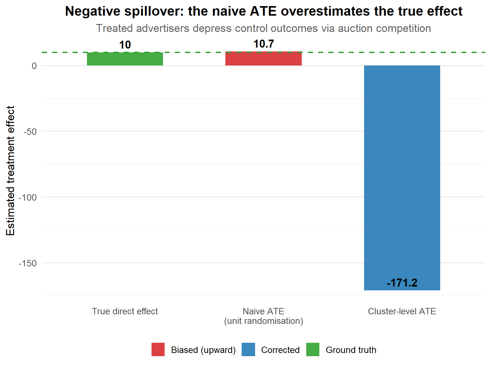
2.2 Positive Spillovers: They Underestimate Your Effect
When treatment benefits spill over to control units, \bar{Y}_C is artificially elevated. This deflates \hat{\tau}^{naive}, producing downward bias on \tau^{direct}. You may kill features that would have been transformative. The direction of this bias also holds under monotone interference structures, where treated units uniformly benefit neighbours regardless of network configuration.
Social contagion. Instagram Stories, LinkedIn’s People You May Know, TikTok’s duet feature, when treated users engage more, they create content and signals that influence their connections. Untreated users who see more content from treated friends are partially treated through observation and imitation.
Network effects. Communication tools like Zoom or Slack become more valuable as more people use them. A feature improvement rolled out to a random subset means control users benefit from having more capable, engaged collaborators, compressing the observed treatment-control gap.
Peer learning. In workplace settings, an employee who receives training on a new tool tends to share that knowledge informally. Their untreated colleagues benefit, elevating the control group’s productivity and understating the programme’s causal impact.
The Kuaishou sharing experiment quantifies this precisely: user-level randomisation showed a +7.76% lift in Share Count, while cluster-based randomisation revealed a +26.61% lift, 3.4× larger. The full case with all metrics is in Section 9.1.
Simulation: gross vs. pure treatment effect.
Code
library(ggplot2)
library(dplyr)
t <- c(-2, -1, 0, 1, 2)
dat <- data.frame(
time = rep(t, 3),
value = c(
100.0, 101.0, 104.0, 125.0, 150.0,
100.0, 101.0, 104.0, 110.0, 118.0,
100.0, 101.0, 104.0, 105.0, 108.0
),
group = factor(rep(c(
"Treated (observed)",
"Gross control (exposed to spillover)",
"Clean control (no spillover)"
), each = 5),
levels = c(
"Treated (observed)",
"Gross control (exposed to spillover)",
"Clean control (no spillover)"
))
)
ggplot(dat, aes(x = time, y = value, colour = group, linetype = group)) +
geom_line(linewidth = 1.4) +
geom_point(size = 3.5) +
geom_vline(xintercept = 0, linetype = "dashed", colour = "grey40", linewidth = 0.7) +
annotate("text", x = 0.08, y = 152, label = "Treatment\nstarts",
size = 3.8, hjust = 0, colour = "grey35", fontface = "italic") +
annotate("segment", x = 2.2, xend = 2.2, y = 118, yend = 150,
arrow = arrow(length = unit(0.18, "cm"), type = "closed", ends = "both"),
colour = "#d62728", linewidth = 1.3) +
annotate("text", x = 1.5, y = 134, label = "Gross ATT\n(naive A/B)",
size = 3.5, colour = "#d62728", fontface = "bold", hjust = 0) +
annotate("segment", x = 2.65, xend = 2.65, y = 108, yend = 150,
arrow = arrow(length = unit(0.18, "cm"), type = "closed", ends = "both"),
colour = "#ff7f0e", linewidth = 1.3) +
annotate("text", x = 2.9, y = 130, label = "Pure ATT\n(cluster RCT)",
size = 3.5, colour = "#ff7f0e", fontface = "bold", hjust = 0) +
scale_colour_manual(values = c(
"Treated (observed)" = "#1f77b4",
"Gross control (exposed to spillover)" = "#555555",
"Clean control (no spillover)" = "#2ca02c"
)) +
scale_linetype_manual(values = c(
"Treated (observed)" = "solid",
"Gross control (exposed to spillover)" = "dashed",
"Clean control (no spillover)" = "dotted"
)) +
scale_x_continuous(
breaks = t,
labels = c("t−2", "t−1", "t", "t+1", "t+2"),
limits = c(-2.3, 3.9)
) +
scale_y_continuous(limits = c(96, 162), breaks = seq(100, 160, by = 20)) +
labs(
title = "Positive spillover: Gross ATT vs. Pure ATT",
subtitle = "The gross control group is elevated by social contagion, compressing the observed treatment–control gap.",
x = "Time relative to treatment",
y = "Outcome (indexed to 100 at t−2)",
colour = NULL,
linetype = NULL
) +
theme_minimal(base_size = 13) +
theme(
plot.title = element_text(size = 14, face = "bold", hjust = 0.5),
plot.subtitle = element_text(size = 10.5, hjust = 0.5, colour = "grey40"),
legend.position = c(0.02, 0.98),
legend.justification = c(0, 1),
legend.background = element_rect(fill = "white", colour = "grey75", linewidth = 0.3),
legend.key.width = unit(1.6, "cm"),
legend.text = element_text(size = 10),
panel.grid.minor = element_blank()
)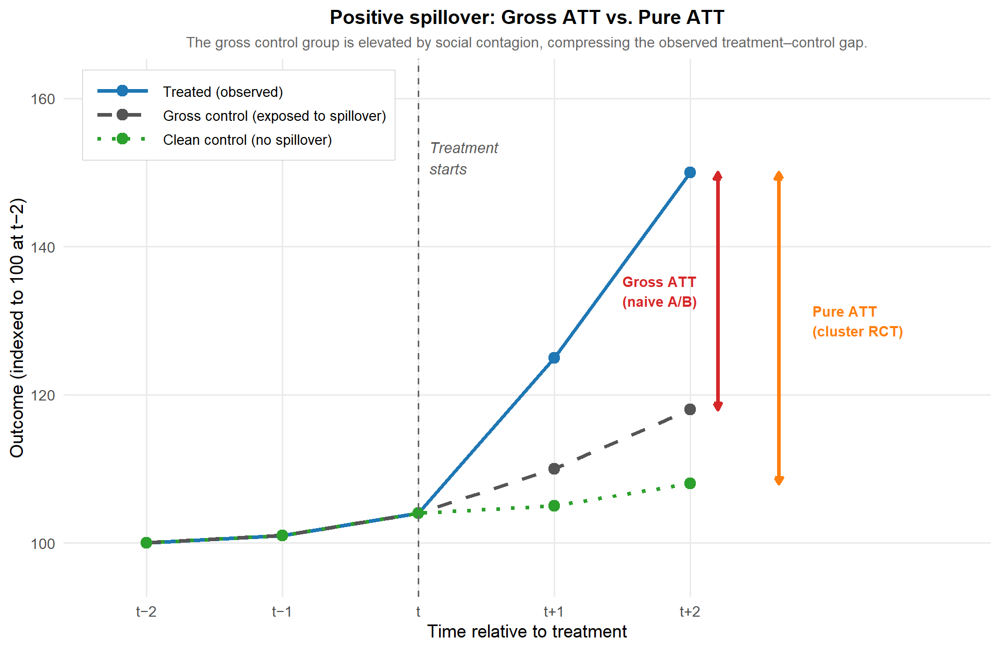
2.3 Cross-Metric Spillovers: The Seesaw
WarningEstimation failure vs optimisation failure, a crucial distinction
Sections 2.1 and 2.2 are about biased estimation: your ATE on the primary metric is wrong because cross-unit interference contaminates the comparison. The Seesaw described in this section is a fundamentally different failure mode. Your ATE on the primary metric is correctly estimated, the p-values are valid, the confidence intervals are calibrated. The problem is that the primary metric you are optimising has negative externalities on other dimensions your firm cares about. Cluster randomisation cannot fix this. The fix requires changing the objective function, not the experimental design.
Li, Luo, and Zhang (2025) formalise a phenomenon they call seesaw experimentation. A firm runs A/B tests on innovations in a decentralised fashion, adopting each one that shows a positive effect on the primary metric. Each innovation also affects secondary dimensions that are either not measured in that test or not factored into the launch decision. Each test is correctly designed and correctly analysed. Each adopted innovation genuinely helps the primary metric. Yet the cumulative effect on the firm’s overall performance can be negative. The firm marches from victory to victory on its experiment dashboard while its overall health quietly deteriorates.
Formal setup. Let (U_t, V_t) be the effects of innovation t on the primary dimension U (e.g., conversion) and secondary dimension V (e.g., retention), drawn i.i.d. from a bivariate normal:
(U, V) \sim \mathcal{N}\!\left(\begin{pmatrix}\mu_u \\ \mu_v\end{pmatrix},\; \begin{pmatrix}\sigma_u^2 & \rho\sigma_u\sigma_v \\ \rho\sigma_u\sigma_v & \sigma_v^2\end{pmatrix}\right)
The average innovation is harmful in both dimensions (\mu_u, \mu_v < 0), reflecting the natural feature of mature organisations where most ideas are bad. The firm’s adoption rule is D_t = \mathbf{1}(U_t > 0). The Seesaw occurs when the firm’s long-run average performance \mathbb{E}[D(U + V)] is negative despite D = 1 always implying U > 0.
Definition 1 (Li, Luo, and Zhang, 2025). A firm exhibits the phenomenon of seesaw experimentation when its long-run average performance E[D(U + V)] is negative despite adopting innovations only when they demonstrate positive effects in their respective primary dimensions.
In the symmetric case (\mu_u = \mu_v = \mu, \sigma_u = \sigma_v = \sigma), Proposition 1 of Li et al. (2025) provides the following sufficient condition for seesaw experimentation:
-1 \leq \rho < 2\left(\frac{-\mu}{\sigma}\right) M\!\left(\frac{-\mu}{\sigma}\right) - 1
where M(\alpha) = \frac{1 - \Phi(\alpha)}{\phi(\alpha)} is the Mills ratio of the standard normal distribution, \alpha = |\mu|/\sigma is the signal-to-noise ratio, and \phi, \Phi are the standard normal PDF and CDF respectively.
WarningAssumptions underlying the Seesaw model
The results above rely on a symmetric bivariate Gaussian structure (\mu_u = \mu_v, \sigma_u = \sigma_v). The qualitative insight, that selecting on one dimension creates hidden losses on another, is robust and holds in a wide range of settings where the correlation structure is adverse. However, the exact sufficient condition and the specific hurdle rate z^* below are model-dependent. Practitioners should treat these as useful guides rather than universal rules.
The optimal hurdle rate. Proposition 2 of Li et al. (2025) derives the hurdle rate that maximises long-run average performance when \rho \in (-1, 1):
z^* = \frac{\rho - 1}{\rho + 1}\,\mu
At the extremes: when \rho \to 1, z^* \to 0 (no hurdle needed); when \rho = 0, z^* = -\mu (the hurdle equals the unconditional expected harm to V); when \rho \to -1, z^* \to \infty (adoption should effectively cease).
The consumer finance case. Wang and Xiao (2025) document the Seesaw in a consumer finance setting. Promotions increased loan conversion by +12.3 percentage points and increased 60-day default probability by +1.8 percentage points (p < 0.01). The same feature that lifted conversion selectively recruited the highest-default-risk customers. The solution was not to redesign the experiment but to redesign the targeting rule (see Section 9.3 for the full analysis).
Simulation: phase diagram and cumulative performance.
Code
library(ggplot2)
library(dplyr)
library(MASS)
library(patchwork)
set.seed(2026)
E_DUplusV <- function(mu, sigma, rho, n = 40000) {
S <- matrix(c(sigma^2, rho * sigma^2, rho * sigma^2, sigma^2), 2, 2)
draws <- mvrnorm(n, mu = c(mu, mu), Sigma = S)
mean((draws[, 1] > 0) * (draws[, 1] + draws[, 2]))
}
grid_pd <- expand.grid(
mu = seq(-2.5, -0.1, by = 0.15),
rho = seq(-0.95, 0.95, by = 0.10)
) |>
rowwise() |>
mutate(perf = E_DUplusV(mu, sigma = 1, rho)) |>
ungroup()
p1 <- ggplot(grid_pd, aes(x = rho, y = abs(mu), fill = perf)) +
geom_tile() +
geom_contour(aes(z = perf), breaks = 0, colour = "white", linewidth = 1.3) +
scale_fill_gradient2(
low = "#d62728", mid = "white", high = "#2ca02c",
midpoint = 0, name = "E[D(U+V)]"
) +
annotate("text", x = -0.55, y = 2.1, label = "Seesaw\nregion",
colour = "grey20", fontface = "bold", size = 4.5) +
annotate("text", x = 0.65, y = 0.5, label = "Safe\nregion",
colour = "grey20", fontface = "bold", size = 4.5) +
labs(
title = "Phase diagram: when does the Seesaw occur?",
subtitle = "White contour = E[D(U+V)] = 0. Red = declining firm performance despite A/B test wins.",
x = expression("Correlation " * rho * " between primary and secondary metric"),
y = expression("Signal-to-noise ratio " * group("|", mu/sigma, "|"))
) +
theme_minimal(base_size = 12) +
theme(
plot.title = element_text(face = "bold", hjust = 0.5),
plot.subtitle = element_text(hjust = 0.5, colour = "grey40")
)
simulate_firm <- function(rho, mu = -1.2, sigma = 1, T = 500) {
S <- matrix(c(sigma^2, rho * sigma^2, rho * sigma^2, sigma^2), 2, 2)
draws <- mvrnorm(T, mu = c(mu, mu), Sigma = S)
U <- draws[, 1]; V <- draws[, 2]
D <- U > 0
data.frame(
t = 1:T,
cum_U = cumsum(D * U),
cum_V = cumsum(D * V),
cum_UV = cumsum(D * (U + V)),
rho = as.character(rho)
)
}
ts <- bind_rows(
simulate_firm(-0.7),
simulate_firm( 0.0),
simulate_firm( 0.8)
) |>
tidyr::pivot_longer(c(cum_U, cum_V, cum_UV), names_to = "metric", values_to = "value") |>
mutate(
metric_label = factor(metric,
levels = c("cum_U", "cum_V", "cum_UV"),
labels = c("Primary (U)", "Secondary (V)", "Total (U+V)")
)
)
p2 <- ggplot(ts |> filter(rho == "-0.7"),
aes(x = t, y = value, colour = metric_label, linewidth = metric_label)) +
geom_line(alpha = 0.9) +
geom_hline(yintercept = 0, linetype = "dashed", colour = "grey50") +
scale_colour_manual(values = c(
"Primary (U)" = "#1f77b4",
"Secondary (V)" = "#d62728",
"Total (U+V)" = "#333333"
)) +
scale_linewidth_manual(values = c(
"Primary (U)" = 1.0,
"Secondary (V)" = 1.0,
"Total (U+V)" = 1.6
)) +
labs(
title = "Cumulative performance under zero-threshold testing (ρ = −0.7)",
subtitle = "Primary metric (blue) improves with each adoption. Total performance (black) trends negative.",
x = "Number of A/B test periods",
y = "Cumulative performance",
colour = NULL,
linewidth = NULL
) +
theme_minimal(base_size = 12) +
theme(
plot.title = element_text(face = "bold", hjust = 0.5),
plot.subtitle = element_text(hjust = 0.5, colour = "grey40"),
legend.position = "bottom"
)
p1 / p2 + plot_annotation(
title = "The Seesaw: marching from victory to victory into decline",
theme = theme(
plot.title = element_text(face = "bold", size = 15, hjust = 0.5)
)
)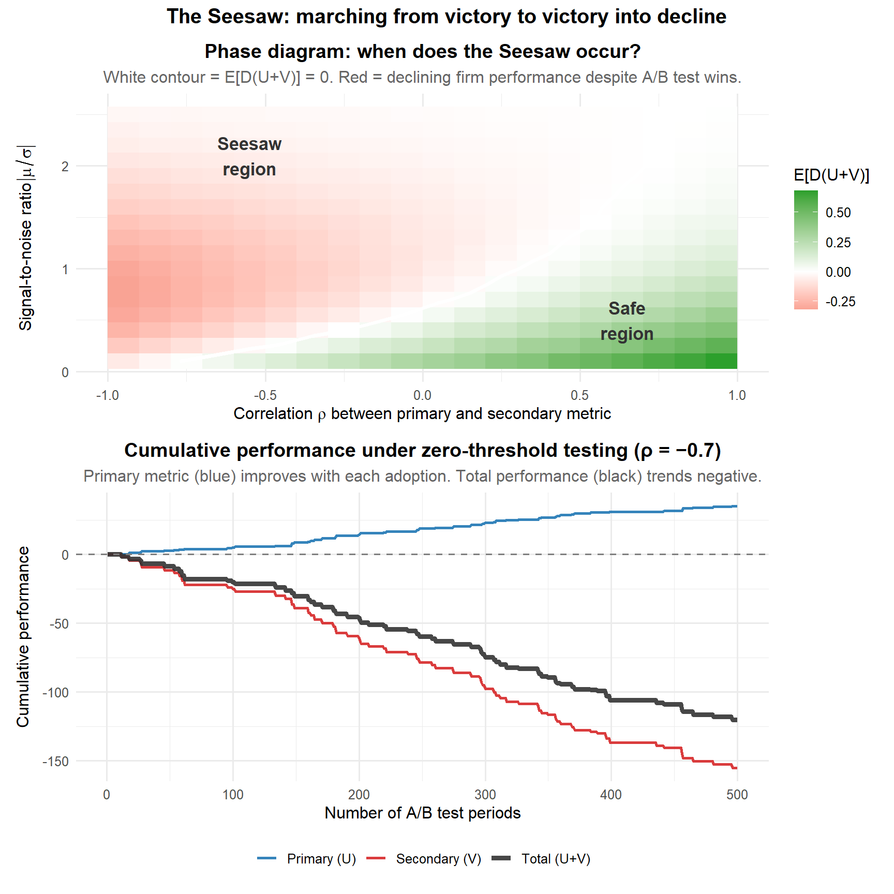
2.4 Summary: Three Mechanisms, Three Diagnoses
| Mechanism | Bias on \tau^{naive} | Root cause | Canonical example | Solution |
|---|---|---|---|---|
| Negative spillover (cross-unit) | Upward: \tau^{naive} > \tau^{direct} | Treatment harms control units via shared resource (auctions, inventory) | Amazon Ads: \tau^{naive} \approx +47; \tau^{total} \approx -946 | Cluster randomisation on the competition graph |
| Positive spillover (cross-unit) | Downward: \tau^{naive} < \tau^{direct} | Treatment benefits control units via social contagion or network effects | Kuaishou sharing: UBR = +7.76%; CBR = +26.61% | Cluster randomisation on the social interaction graph |
| Cross-metric spillover (Seesaw) | None: \tau^{naive} \approx \tau^{direct}, but on the wrong metric | Primary metric has negative externalities on an unmeasured secondary dimension | Consumer finance: conversion +12.3pp but 60-day default +1.8pp | Positive hurdle rate z^*; CATE-based selective targeting |
The key distinction runs along two axes. First, where does the failure live, in the estimation or in the objective? Second, for estimation failures, does the treatment hurt or help the control group, which determines whether \tau^{naive} is too large or too small? For negative and positive spillovers, the failure is in the estimation; the fix is design-based. For the Seesaw, the estimation is fine; the failure is in the objective, and the fix is decision-based.
Chapter 3. The Cost of Ignoring Spillovers
Chapters 1 and 2 gave you the vocabulary and the mechanisms. The question that really matters: does it actually cost anything to ignore them?
It does. This chapter works through four angles: the formal mathematics of bias, the Amazon Ads case with exact coefficient estimates, the organisational costs that never make it into post-mortems, and the connection to invalid inference.
3.1 The Mathematics of Bias
Under SUTVA, the average treatment effect is:
\tau = \mathbb{E}[Y_i(1) - Y_i(0)]
Under random assignment, the simple difference-in-means estimator is unbiased for \tau:
\hat{\tau}_{naive} = \bar{Y}_T - \bar{Y}_C \xrightarrow{p} \tau
Now remove SUTVA. Under interference, the observed outcome for unit i is:
Y_i^{obs} = Y_i(Z_i, \mathbf{Z}_{-i})
The naive estimator is still \hat{\tau}_{naive} = \bar{Y}_T - \bar{Y}_C, but its expectation is no longer \tau^{direct}. The bias decomposes as:
\text{Bias} = \mathbb{E}[\hat{\tau}_{naive}] - \tau^{direct} = \underbrace{\mathbb{E}[Y_i(1, \mathbf{Z}_{-i}) - Y_i(1, \mathbf{0})]}_{\text{indirect effect on treated}} - \underbrace{\mathbb{E}[Y_i(0, \mathbf{Z}_{-i}) - Y_i(0, \mathbf{0})]}_{\text{indirect effect on control}}
The treated mean \bar{Y}_T picks up the direct effect plus any spillover from having other treated units nearby. The control mean \bar{Y}_C picks up any spillover from treated units onto control units. When treated units harm controls (negative spillover), \bar{Y}_C is depressed relative to the true counterfactual, and \hat\tau^{naive} overestimates \tau^{direct}. When treated units help controls (positive spillover), \bar{Y}_C is inflated, and \hat\tau^{naive} underestimates \tau^{direct}.
Simulation.
Code
set.seed(123)
simulate_one <- function(n = 1000, tau_true = 2, delta = -1.5) {
Z <- rbinom(n, 1, 0.5)
Y0 <- rnorm(n, 50, 10)
Y_obs <- Y0 + tau_true * Z
ctrl_idx <- which(Z == 0)
treat_idx <- which(Z == 1)
spill_tgts <- sample(ctrl_idx, length(treat_idx), replace = TRUE)
Y_obs[spill_tgts] <- Y_obs[spill_tgts] + delta
mean(Y_obs[Z == 1]) - mean(Y_obs[Z == 0])
}
tau_true <- 2
delta <- -1.5
naive_ates <- replicate(1000, simulate_one(tau_true = tau_true, delta = delta))
mean_naive <- mean(naive_ates)
ggplot(data.frame(ate = naive_ates), aes(x = ate)) +
geom_histogram(bins = 40, fill = "#E74C3C", alpha = 0.75, colour = "white") +
geom_vline(xintercept = tau_true, colour = "#27AE60",
linewidth = 1.3, linetype = "dashed") +
geom_vline(xintercept = mean_naive, colour = "black",
linewidth = 1.0, linetype = "solid") +
annotate("text", x = tau_true - 0.08, y = 145,
label = paste("True ATE =", tau_true),
colour = "#27AE60", size = 4, hjust = 1, fontface = "bold") +
annotate("text", x = mean_naive + 0.08, y = 115,
label = paste("Mean naive ATE ≈", round(mean_naive, 2)),
colour = "black", size = 4, hjust = 0) +
labs(
x = "Naive ATE estimate",
y = "Count",
title = "The naive ATE is systematically biased upward",
subtitle = paste0("True ATE = ", tau_true,
" | Spillover δ = ", delta,
" | 1,000 simulations")
) +
theme_minimal(base_size = 13) +
theme(plot.title = element_text(face = "bold"), panel.grid.minor = element_blank())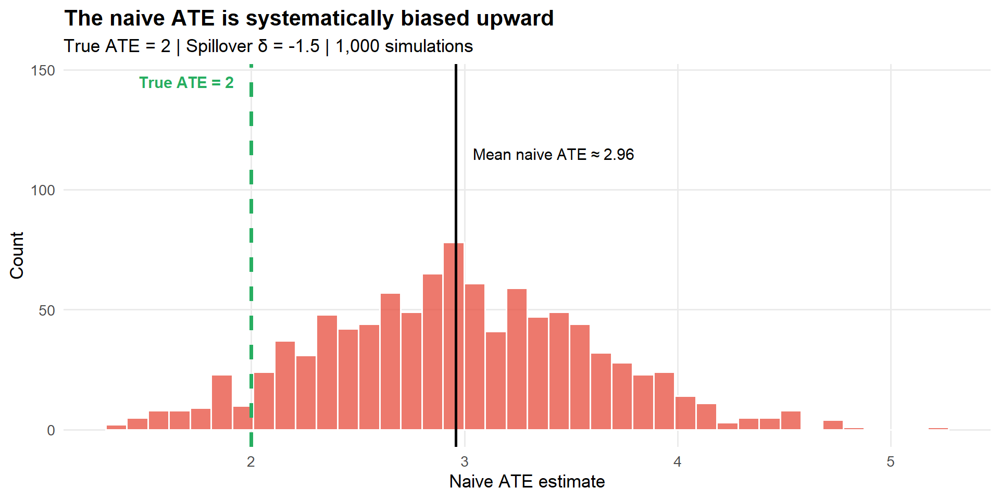
3.2 The Amazon Ads Case: Numbers That Should Worry You
In November 2022, Amazon ran a five-week experiment to test budget recommendations for new advertiser campaigns. The design was standard: 50/50 randomisation at the advertiser level, 111,305 advertisers, across 3,197 clusters built from advertiser–keyword bipartite graphs using spectral co-clustering.
The regression estimated by Jain et al. (2023) is:
Y_{ij} = \alpha + \beta\, T_{ij} + f(T^{intensity}_{ij}) + g(N_j) + \theta Y^0_{ij} + \epsilon_{ij}
where T^{intensity}_{ij} = \frac{\sum_{a \neq i} T_{aj}}{N_j - 1}, N_j is cluster size, and standard errors are clustered at the cluster level.
The numbers. For the primary outcome metric (Metric 1):
| Coefficient | Estimate | Std. Error | Significance |
|---|---|---|---|
treat (\beta: direct effect \tau^{direct}) |
+47.26 | 64.14 | Not significant |
treat_intensity (spillover) |
−993.25 | 327.78 | p < 0.01 |
| Flywheel (\tau^{total}: treat + treat_intensity at full saturation) | −945.99 | p = 0.01 | |
| Control group mean | 7,093 | — | — |
The direct effect is +47.26, positive, but not statistically significant. A naive A/B test would report a small positive result. The spillover coefficient is −993.25, statistically significant, and 20 times larger than the direct effect in the opposite direction. The flywheel effect, what would happen under cluster randomisation, where everyone in the cluster gets treated, is −945.99, representing 13% of the control group mean. A feature that every standard dashboard would flag as “positive and potentially worth shipping” would, under a realistic rollout, destroy 13% of the primary metric.
WarningA note on the “20×” figure
In this specific experiment, the spillover magnitude happened to be roughly 20 times the direct effect. This is striking, but it is not a universal rule of thumb for competitive settings. What the Amazon case establishes is that in auction environments, spillovers can dominate the direct effect by an order of magnitude and can reverse its sign entirely. The appropriate lesson is to treat spillovers as potentially large in competitive settings and to test for them explicitly, not to assume a fixed ratio.
Validation. Jain et al. (2023) run three robustness checks. First, a placebo test: regressing pre-period outcomes on treatment intensity yields null results across all nine metrics. Second, a permutation test: shuffling treatment status while holding clusters constant produces a null distribution against which the observed spillover coefficient has a permutation p-value of 0.006. Third, robustness to specification: the direction and significance hold across non-linear treatment intensity specifications and alternative covariate controls. The full case study is in Section 9.2.
3.3 The Seesaw in Action: Watching the Decline
The Amazon case shows that spillovers bias your estimates. There is a second, more insidious cost: spillovers can cause you to optimise the wrong thing, even when your estimates are perfectly unbiased.
Consider a firm with \mu = -0.3, \sigma = 1, \rho = -0.5. The optimal hurdle rate is:
z^* = \frac{-0.5 - 1}{-0.5 + 1} \times (-0.3) = \frac{-1.5}{0.5} \times (-0.3) = 0.9
Under a zero hurdle rate, roughly half the innovations are adopted, they all passed the primary-dimension test, but the average total effect is solidly negative:
Code
set.seed(2025)
n_periods <- 1000
mu <- -0.3
sigma <- 1
rho <- -0.5
Sigma_mat <- matrix(c(sigma^2, rho * sigma^2,
rho * sigma^2, sigma^2), nrow = 2)
innovations <- mvrnorm(n_periods, mu = c(mu, mu), Sigma = Sigma_mat)
U <- innovations[, 1]
V <- innovations[, 2]
primary <- sample(c(1L, 2L), n_periods, replace = TRUE)
adopted <- vapply(seq_len(n_periods),
function(t) innovations[t, primary[t]] > 0,
logical(1))
combined <- ifelse(adopted, U + V, 0)
cum_adopted <- cumsum(adopted)
running_avg <- ifelse(cum_adopted > 0, cumsum(combined) / cum_adopted, NA_real_)
df_seesaw <- data.frame(
period = seq_len(n_periods),
running_avg = running_avg,
n_adopted = cum_adopted
)
pct_adopted <- round(100 * tail(cum_adopted, 1) / n_periods, 1)
final_avg <- round(tail(running_avg[!is.na(running_avg)], 1), 3)
ggplot(df_seesaw, aes(x = period, y = running_avg)) +
geom_line(colour = "#E74C3C", linewidth = 0.9) +
geom_hline(yintercept = 0,
linetype = "dashed", colour = "grey30", linewidth = 0.9) +
annotate("label",
x = 650, y = 0.09,
label = paste0(pct_adopted, "% of innovations adopted\n",
"(all 'won' their primary-dimension test)"),
colour = "#27AE60", size = 3.5, fontface = "italic") +
annotate("label",
x = 650, y = -0.28,
label = paste0("Running average = ", final_avg,
"\n(firmly negative)"),
colour = "#E74C3C", size = 4, fontface = "bold") +
labs(
x = "Period (cumulative experiments)",
y = expression("Running average of E[D(U + V)]"),
title = "The Seesaw: winning every battle, losing the war",
subtitle = paste0("\u03bc = ", mu, ", \u03c3 = ", sigma,
", \u03c1 = ", rho,
" | zero hurdle rate | optimal z* = 0.9")
) +
theme_minimal(base_size = 13) +
theme(plot.title = element_text(face = "bold"), panel.grid.minor = element_blank())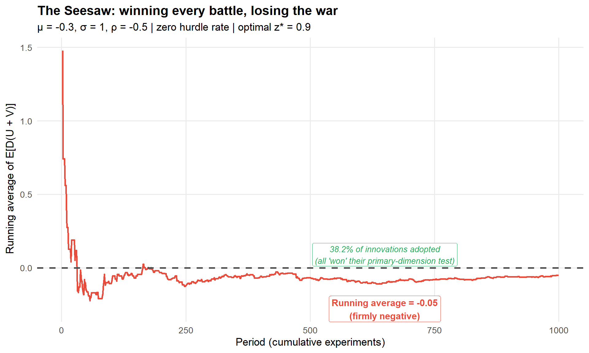
The gap between what firms do (hurdle effectively zero, since “p < 0.05” selects on significance without requiring the effect to be large enough to offset collateral damage) and what they should do (z^* = 0.9\sigma in this parameterisation) is enormous.
3.4 The Organisational Cost
Step back from the individual experiment and think about what these effects aggregate to across a firm running hundreds or thousands of experiments per year.
Wrong launch decisions. The Amazon Ads case is the canonical example: a feature the naive analysis calls a win is in reality a substantial loss. For every case like Amazon’s that gets caught, because a team was careful enough to model treatment intensity, several more ship undetected.
Silent failures. Spillovers do not always flip the sign of an effect. Sometimes they shrink it into statistical noise, making a genuinely good feature appear useless. Under user-based randomisation at Kuaishou, the seven-day retention effect of the sharing strategy was indistinguishable from noise (p = 0.484). Under cluster-based randomisation, the same feature produced a significant lift (p < 0.01). A team relying on UBR would have shelved something that actually works.
The Seesaw accumulation. As Section 3.3 shows, the cumulative performance problem is the expected long-run outcome for firms with a zero-hurdle culture, negatively correlated performance dimensions, and an experiment portfolio where most innovations are marginal.
WarningThe Hidden Cost: Invalid Inference
Even if spillovers are small enough that the point estimate is approximately correct, they invalidate your standard errors. Units are no longer independent, so the effective sample size is smaller than N. Confidence intervals are too narrow, p-values are too small, and you will routinely ship features that do not actually work.
Eckles, Karrer, and Ugander (2017) demonstrate that the cost of ignoring network interference is not just bias in the point estimate, it is a fundamental breakdown of inference. The confidence interval tells you the range of values consistent with your data under the assumption of independence. Once that assumption fails, the interval is no longer a valid probability statement.
PART II: THE TOOLKIT
Chapter 4. How to Detect Spillovers
This chapter gives you a concrete diagnostic toolkit, methods you can apply to data you already have to determine whether SUTVA is holding or quietly falling apart. We cover four things: warning signs, the Treatment Intensity method (the Amazon approach), the WGSR metric (the Kuaishou approach), and practical diagnostic tests.
4.1 Warning Signs
Red Flag 1: Guardrail metrics behaving strangely. Your primary metric improves, but a seemingly unrelated guardrail metric deteriorates. Two metrics that are typically orthogonal in historical data start moving in opposite directions during your experiment. This anti-correlated pattern is precisely what Li, Luo, and Zhang (2025) identify as the signature of seesaw dynamics.
Red Flag 2: Local vs. global discrepancies. The treatment effect is strong in one region or segment but disappears in the aggregate. Local category lifts of +6.3% and +5.1% combine to only +1.8% in the aggregate because treated and control units are competing for the same impression slots.
Red Flag 3: The “fade-out” on rollout. Your treatment effect is large at 5% traffic, moderate at 25%, small at 50%, and vanishes at 100% rollout. This is the classic signature of negative spillovers driven by resource competition. If you have ever launched a feature that “won the A/B test but did nothing in production,” this is likely what happened.
WarningThe Rollout Test
If you suspect spillovers, the cheapest diagnostic is a phased rollout. Run the experiment at 10%, then 25%, then 50%. If the treatment effect per user decreases as the treatment fraction increases, you almost certainly have negative spillovers. If the effect increases with the treatment fraction, you may have positive spillovers (network effects).
results %>%
group_by(treatment_fraction) %>%
summarise(
effect = mean(outcome[treatment == 1]) - mean(outcome[treatment == 0])
) %>%
ggplot(aes(x = treatment_fraction, y = effect)) +
geom_point() + geom_line() +
labs(title = "Effect Fades as More Users Are Treated",
y = "Estimated ATE", x = "Treatment Fraction")Red Flag 4: Persistent negative correlation between orthogonal metrics. Two metrics that historically correlate at \rho = 0.72 drop to \rho = 0.31 in the treatment group during the experiment. Compare the correlation structure of your key metrics during the experiment against the same correlations from a pre-period or an A/A test.
4.2 The Treatment Intensity Method (Amazon Approach)
The Treatment Intensity method from Jain et al. (2023) is the most practical option for competitive settings, and it works with data you already have from a standard A/B test.
The core idea. A control unit surrounded by treated competitors is not the same as a control unit surrounded by other control units. The Treatment Intensity method asks: does the outcome of unit i vary with the fraction of treated peers in its cluster?
Step 1: Define clusters. Clusters must be defined before the experiment based on the mechanism through which interference operates. This is a domain choice, not a statistical one.
| Setting | Interference Mechanism | Natural Cluster |
|---|---|---|
| Ad auctions | Advertisers compete for the same keywords | Keyword-level clusters |
| Marketplace search | Sellers compete for the same search positions | Category-level clusters |
| Social networks | Users influence their connections | Ego-network clusters |
| Ride-sharing | Drivers compete for the same ride requests | Geographic zones |
| Content feeds | Posts compete for the same impression slots | Content-topic clusters |
Step 2: Calculate treatment intensity. For unit i in cluster j with cluster size N_j:
T^{\text{intensity}}_{ij} = \frac{\sum_{a \neq i} T_{aj}}{N_j - 1}
Unit i is excluded from its own denominator to avoid mechanical correlation between own treatment and intensity. Under a 50/50 experiment in a large cluster, T^{\text{intensity}}_{ij} \approx 0.5 for almost everyone. The variation that drives identification comes from small clusters.
NoteWhy Small Clusters Are Your Friend
A cluster of size 2 with 50/50 randomisation will have intensity values of 0 or 1 for every unit, maximum variation. A cluster of size 1,000 will have intensity tightly clustered around 0.5. The identification power of the Treatment Intensity method comes from the small clusters, which also means the estimated spillovers may not generalise to large competitive groups. Always check the density of T^{\text{intensity}} across cluster sizes before interpreting results.
Step 3: Run the regression.
Y_{ij} = \alpha + \beta \, T_{ij} + f\!\left(T^{\text{intensity}}_{ij}\right) + g\!\left(N_j\right) + \theta \, Y^{0}_{ij} + \epsilon_{ij}
\beta \, T_{ij} is the direct treatment effect (\tau^{direct}). f\!\left(T^{\text{intensity}}_{ij}\right) is the spillover effect, if this coefficient is statistically significant, SUTVA is violated. g\!\left(N_j\right) is a control for cluster size (not optional, without it, you conflate cluster-size effects with spillover effects). Y^{0}_{ij} is the pre-period outcome for precision. Standard errors must be clustered at the cluster level.
The “Flywheel Effect” (\tau^{total}), the total impact when both unit i and all its peers are treated, is \beta + f(1).
The four identification assumptions.
Assumption 1: No inter-cluster spillovers. SUTVA holds across clusters even if it fails within them. Evaluate robustness by varying the clustering parameters.
Assumption 2: Intensity captures spillovers. The fraction of treated peers is a sufficient statistic for the interference mechanism. Causal network motifs (Yuan et al., 2021) can relax this when network data are available.
Assumption 3: Intensity is exogenous conditional on cluster size. Testable: regress pre-period outcomes on T^{\text{intensity}}_{ij} and N_j, the intensity coefficient should be zero.
Assumption 4: Sufficient variation in intensity. Plot the density of T^{\text{intensity}}_{ij} and confirm it is not degenerate at 0.5.
R implementation.
Code
library(dplyr)
library(tidyr)
library(tibble)
library(purrr)
library(ggplot2)
library(sandwich)
library(lmtest)
set.seed(42)
n_clusters <- 500
cluster_sizes <- sample(2:20, n_clusters, replace = TRUE)
data <- map_dfr(seq_len(n_clusters), function(j) {
n_j <- cluster_sizes[j]
tibble(
user_id = seq_len(n_j),
cluster_id = j,
N_cluster = n_j,
treatment = rbinom(n_j, 1, 0.5),
pre_outcome = rnorm(n_j, mean = 100, sd = 20)
)
}) %>%
group_by(cluster_id) %>%
mutate(
treated_peers = sum(treatment) - treatment,
T_intensity = if_else(N_cluster > 1, treated_peers / (N_cluster - 1), 0),
outcome = pre_outcome
+ 10 * treatment
- 15 * T_intensity
+ rnorm(n(), 0, 10)
) %>%
ungroup()
ggplot(data, aes(x = T_intensity)) +
geom_histogram(bins = 30, fill = "#4477AA", colour = "white", alpha = 0.85) +
labs(
title = "Distribution of Treatment Intensity",
subtitle = "Variation should be spread across [0, 1]; most comes from small clusters",
x = "Fraction of Treated Peers (Treatment Intensity)",
y = "Count"
) +
theme_minimal(base_size = 13)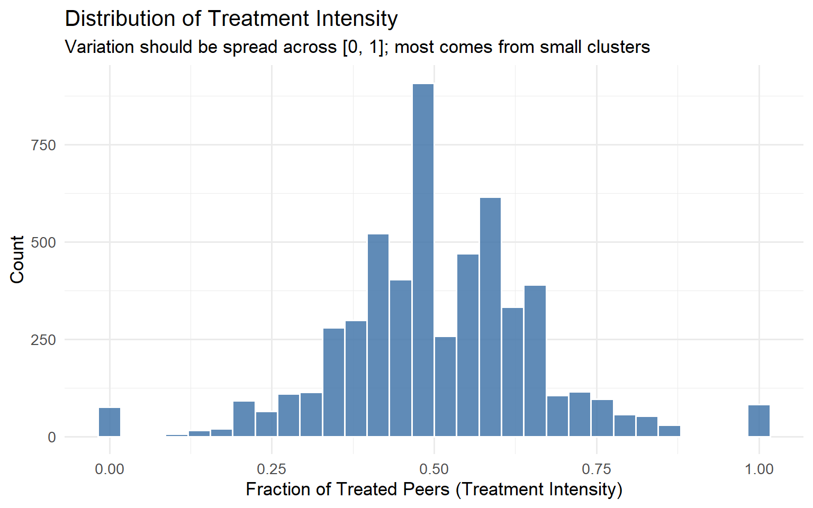
Code
model_spillover <- lm(
outcome ~ treatment + T_intensity + N_cluster + pre_outcome,
data = data
)
coeftest(model_spillover, vcov = vcovCL, cluster = ~cluster_id)
t test of coefficients:
Estimate Std. Error t value Pr(>|t|)
(Intercept) 0.2687508 0.9136813 0.2941 0.7687
treatment 9.5689984 0.2675565 35.7644 <2e-16 ***
T_intensity -16.6602159 0.9043168 -18.4230 <2e-16 ***
N_cluster 0.0189706 0.0290562 0.6529 0.5139
pre_outcome 1.0052489 0.0064268 156.4155 <2e-16 ***
---
Signif. codes: 0 '***' 0.001 '**' 0.01 '*' 0.05 '.' 0.1 ' ' 1Code
set.seed(99)
n_perms <- 500
perm_coefs <- replicate(n_perms, {
perm_data <- data %>%
group_by(cluster_id) %>%
mutate(treatment = sample(treatment)) %>%
mutate(
treated_peers = sum(treatment) - treatment,
T_intensity = if_else(N_cluster > 1, treated_peers / (N_cluster - 1), 0)
) %>%
ungroup()
coef(lm(outcome ~ treatment + T_intensity + N_cluster + pre_outcome,
data = perm_data))["T_intensity"]
})
observed_coef <- coef(model_spillover)["T_intensity"]
p_perm <- mean(abs(perm_coefs) >= abs(observed_coef))
ggplot(data.frame(coef = perm_coefs), aes(x = coef)) +
geom_histogram(bins = 40, fill = "#66CCEE", colour = "white", alpha = 0.85) +
geom_vline(xintercept = observed_coef, colour = "#EE6677",
linewidth = 1.4, linetype = "solid") +
annotate("text",
x = observed_coef * 1.05,
y = Inf,
label = paste0("Observed = ", round(observed_coef, 2),
"\np = ", round(p_perm, 3)),
vjust = 1.5, hjust = 0, size = 4.5, colour = "#EE6677") +
labs(
title = "Permutation Test: Null Distribution of Spillover Coefficient",
subtitle = "Red line = observed estimate. Far tail position confirms genuine spillover.",
x = "T_intensity Coefficient (permuted)",
y = "Count"
) +
theme_minimal(base_size = 13)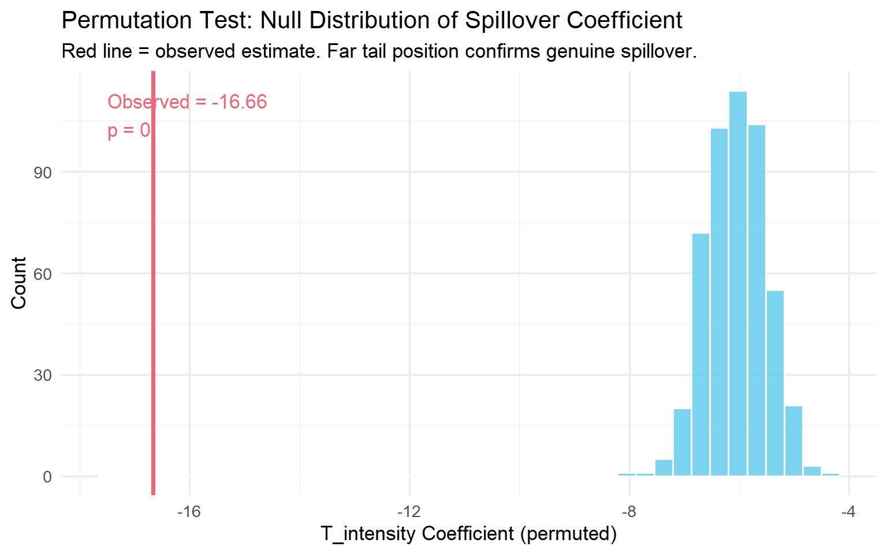
NoteWhat the regression output tells you
The coefficient on treatment is \hat\tau^{direct}. The coefficient on T_intensity is the spillover effect per unit of intensity. The Flywheel Effect (\hat\tau^{total}) is the sum of these two coefficients. In the Amazon application, \hat\tau^{direct} \approx +47 and the flywheel was approximately -946, the sign flipped. That is the number that should determine your launch decision.
4.3 The WGSR Metric (Kuaishou Approach)
For social platforms, the relevant diagnostic is the fraction of social interactions that stay within the same experimental group. Min et al. (2026) introduced the Within-Group Share Ratio (WGSR) for this purpose.
Definition
\text{WGSR} = \frac{\text{Number of interactions within the same experimental group}}{\text{Total number of interactions}}
Under perfect SUTVA compliance, WGSR would be 1.0. Under user-level randomisation with no network structure, WGSR will be approximately 0.5.
What the numbers mean
Under user-level randomisation at Kuaishou, the WGSR was 49.68%, essentially a coin flip. Under cluster-based randomisation using their Balanced Louvain algorithm, WGSR jumped to 90.39%. That is the difference between an experiment where spillover dominates and one where it is largely contained.
Min et al. (2026) found a nearly linear relationship between WGSR and the bias in the estimated ATE, with R^2 > 0.999 in their simulation conditions. This simulation result is specific to their experimental setting and network structure; the precise linearity coefficient will vary across platforms. What the finding establishes is that WGSR is a useful calibration tool: if you can compute WGSR for your design, you can predict the direction and rough magnitude of bias you are absorbing.
TipThe 0.85 rule of thumb
Based on Min et al.’s (2026) simulation results, moving from user-level randomisation (WGSR \approx 0.50) to cluster-based randomisation (WGSR \approx 0.94–0.95) reduced estimation bias by 87–89%. A WGSR of 0.85 or higher captures the large majority of that bias reduction in settings similar to Kuaishou’s. If your clustering achieves WGSR > 0.85, you have likely crossed the “good enough” threshold for most practical purposes.
WGSR R implementation
Code
library(dplyr)
library(ggplot2)
library(igraph)
set.seed(123)
n_users <- 1000
g_net <- sample_smallworld(dim = 1, size = n_users, nei = 5, p = 0.1)
V(g_net)$group_UBR <- sample(c("Treatment", "Control"), n_users, replace = TRUE)
community <- cluster_louvain(g_net)
cluster_ids <- membership(community)
unique_clusters <- unique(cluster_ids)
cluster_assign <- setNames(
sample(c("Treatment", "Control"), length(unique_clusters), replace = TRUE),
unique_clusters
)
V(g_net)$group_CBR <- cluster_assign[as.character(cluster_ids)]
compute_wgsr <- function(graph, group_attr) {
groups <- vertex_attr(graph, group_attr)
el <- as_edgelist(graph, names = FALSE)
all_edges <- rbind(el, el[, c(2, 1)])
sender_group <- groups[all_edges[, 1]]
receiver_group <- groups[all_edges[, 2]]
treatment_sends <- sender_group == "Treatment"
within_group <- treatment_sends & (receiver_group == "Treatment")
across_groups <- treatment_sends & (receiver_group %in% c("Treatment", "Control"))
sum(within_group) / sum(across_groups)
}
wgsr_ubr <- compute_wgsr(g_net, "group_UBR")
wgsr_cbr <- compute_wgsr(g_net, "group_CBR")
cat(sprintf("WGSR under UBR: %.3f\n", wgsr_ubr))WGSR under UBR: 0.495Code
cat(sprintf("WGSR under CBR: %.3f\n", wgsr_cbr))WGSR under CBR: 0.858Code
wgsr_vals <- seq(0.50, 0.95, by = 0.01)
true_ate <- 2.0
bias_vals <- -1.2 * (1 - wgsr_vals) / 0.5
plot_data <- data.frame(
WGSR = wgsr_vals,
Observed_ATE = true_ate + bias_vals
)
ggplot(plot_data, aes(x = WGSR, y = Observed_ATE)) +
geom_line(colour = "#4477AA", linewidth = 1.3) +
geom_hline(yintercept = true_ate, linetype = "dashed",
colour = "#EE6677", linewidth = 1) +
annotate("text", x = 0.92, y = true_ate + 0.06,
label = "True ATE (WGSR = 1.0)",
colour = "#EE6677", size = 4) +
labs(
title = "WGSR vs. Observed ATE",
subtitle = "Higher WGSR = less bias. Relationship is approximately linear in Min et al.'s (2026) simulation setting.",
x = "Within-Group Share Ratio (WGSR)",
y = "Observed ATE"
) +
theme_minimal(base_size = 13)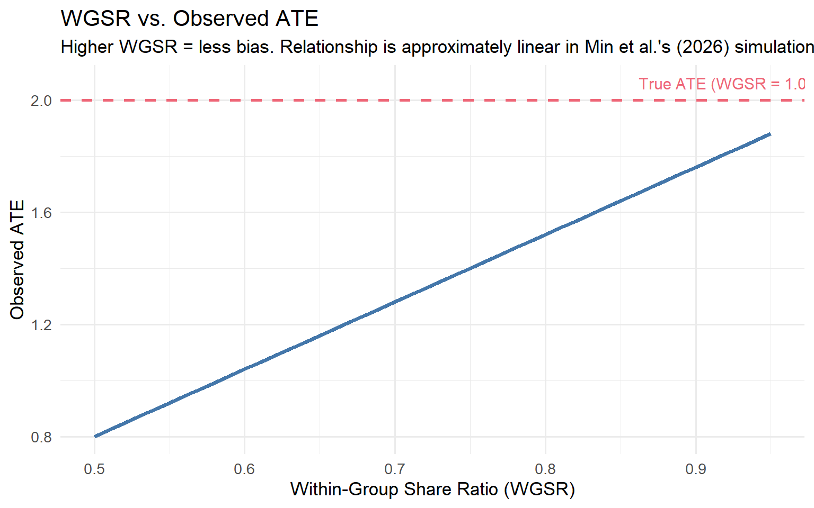
WGSR has three uses in a diagnostic workflow: pre-experiment (compute expected WGSR under your proposed randomisation design by simulating assignment on the historical interaction graph, if expected WGSR is below 0.7, user-level randomisation is likely to produce biased estimates), during the experiment (monitor WGSR as a live metric alongside primary outcomes, a sudden drop is an early warning that the boundary is being eroded), and post-experiment (compare WGSR across experiments with similar treatments to calibrate naive estimates).
4.4 Practical Diagnostic Tests
A/A tests as a baseline. A spillover-aware A/A test checks whether the correlation structure of your metrics changes between the A/A period and the A/B period. If two metrics that were uncorrelated in the A/A test become strongly negatively correlated in the A/B test, interference is the most likely explanation. The A/A test also serves as variance calibration: if the observed variance of the difference-in-means in the A/A test is larger than what your standard formulas predict, your A/B test standard errors are likely too small.
Spatial correlation diagnostics (Moran’s I). If you have geographic or graph-based proximity data, compute Moran’s I on your primary outcome metric at the end of an experiment, separately for the treatment and control groups:
I = \frac{N}{W} \cdot \frac{\sum_i \sum_j w_{ij}(y_i - \bar{y})(y_j - \bar{y})}{\sum_i (y_i - \bar{y})^2}
Under SUTVA, I \approx 0 in both groups. If Moran’s I is significantly positive in the control group, treated units are influencing nearby control units.
Code
library(spdep)
moran_result <- moran.test(control_outcomes, listw = W)
print(moran_result)Saturation designs. Deliberately vary the treatment saturation across independently randomised clusters and estimate:
Y_{ij} = \alpha + \beta \, T_{ij} + \gamma \, S_j + \delta \, (T_{ij} \times S_j) + \theta \, Y^{0}_{ij} + \epsilon_{ij}
where S_j is the saturation level assigned to cluster j. \gamma captures the spillover on control users; \delta captures whether the direct effect depends on saturation.
Code
library(dplyr)
library(tidyr)
library(tibble)
library(ggplot2)
set.seed(2024)
saturation_levels <- c(0.10, 0.25, 0.50, 0.75, 0.90)
n_clusters_per_level <- 10
cluster_size <- 100
clusters <- tibble(
cluster_id = 1:(length(saturation_levels) * n_clusters_per_level),
saturation = rep(saturation_levels, each = n_clusters_per_level)
)
sat_data <- clusters %>%
rowwise() %>%
mutate(
users = list(tibble(
user_id = seq_len(cluster_size),
treatment = rbinom(cluster_size, 1, saturation),
pre_outcome = rnorm(cluster_size, mean = 50, sd = 10)
))
) %>%
unnest(users) %>%
ungroup() %>%
mutate(
outcome = 50
+ 4 * treatment
+ (-3) * saturation
+ 0.6 * (pre_outcome - 50)
+ rnorm(n(), sd = 6)
)
effects_by_saturation <- sat_data %>%
group_by(saturation, cluster_id) %>%
summarise(
tau = mean(outcome[treatment == 1]) - mean(outcome[treatment == 0]),
.groups = "drop"
) %>%
group_by(saturation) %>%
summarise(
tau_hat = mean(tau),
se = sd(tau) / sqrt(n()),
.groups = "drop"
)
ggplot(effects_by_saturation, aes(x = saturation, y = tau_hat)) +
geom_point(size = 3, colour = "#EE6677") +
geom_errorbar(
aes(ymin = tau_hat - 1.96 * se, ymax = tau_hat + 1.96 * se),
width = 0.02, colour = "#EE6677"
) +
geom_smooth(method = "lm", se = FALSE, linetype = "dashed", colour = "gray50") +
geom_hline(yintercept = 0, linetype = "dotted", colour = "gray60") +
labs(
title = "Saturation Design: Per-User Treatment Effect by Saturation Level",
subtitle = "Declining effect at higher saturation confirms negative spillovers.",
x = "Treatment Saturation (Fraction Treated per Cluster)",
y = "Estimated Per-User Treatment Effect"
) +
theme_minimal(base_size = 13)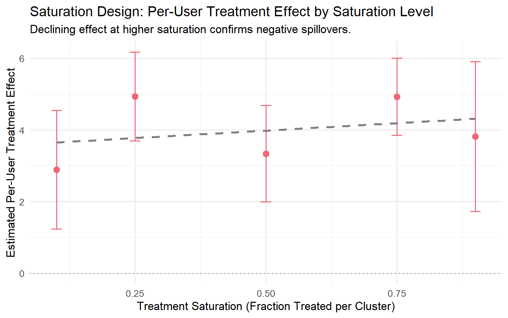
ImportantWhich diagnostic to run when
| Situation | Best diagnostic |
|---|---|
| Experiment already running, no cluster data | Warning signs + correlation structure comparison (A/A vs A/B) |
| Cluster data available pre-experiment | Treatment Intensity regression + placebo + permutation |
| Social graph available | WGSR monitoring, pre/during/post |
| Planning a new experiment in a spillover-prone product | Saturation design or spatial A/A test first |
| Suspicious rollout fade-out | Phased rollout plot + saturation curve |
No single method covers every situation. Use the warning signs as a first filter, then escalate to the formal tests where infrastructure allows.
Chapter 5. Experimental Designs That Contain Spillovers
This chapter gives you a menu of six designs, each tailored to a specific mechanism of interference.
ImportantThere Is No Free Lunch
Every design in this chapter trades bias for variance. Containing spillovers always means shrinking your effective sample size. Your job is not to find the design with no trade-off (it doesn’t exist); it’s to find the design whose trade-off matches your business problem.
5.1 Cluster-Based Randomisation
Cluster-based randomisation (CBR) is the default answer to network interference. Instead of randomising individual users, you partition the population into clusters and randomise entire clusters to treatment or control. If clusters are chosen so that most of a user’s interactions stay inside their own cluster, most spillovers stay within a single experimental arm.
WarningThe Bias–Variance Trade-off of Clustering
Reducing spillover bias comes at a direct cost to your effective sample size. If you have 10 million users partitioned into 200 clusters, your statistical power looks like an experiment with 200 independent units, not 10 million.
Balanced Louvain: the Kuaishou approach. Standard Louvain optimises modularity but produces uncontrolled cluster sizes. Min et al. (2026) address this with Balanced Louvain, which augments standard Louvain with two mechanisms.
First, a soft size penalty during optimisation:
S_i^C = \Delta Q_i^C - \alpha \cdot P(|C|), \quad P(|C|) = \begin{cases} 0 & \text{if } |C| \leq \tau \\ \bar{k} \cdot \frac{|C| - \tau}{\tau} & \text{if } |C| > \tau \end{cases}
with \tau = N_{\max}/2 and \bar{k} the average node degree.
Second, a hard post-processing split: after convergence, any cluster exceeding N_{\max} is split by iteratively moving its least internally connected nodes to a new cluster.
NoteThe Kuaishou production results
Running Balanced Louvain with \alpha = 0.3 and N_{\max} = 250{,}000 on roughly 370 million users, Min et al. (2026) produced 73,340 clusters with an average size of 5,045. Overall modularity was 0.466. WGSR jumped from 49.68% under user-based randomisation to 90.39% under cluster-based randomisation.
Their ablation study (Table 2 of Min et al., 2026) shows the Soft+Hard (Balanced Louvain) approach achieves the best composite score (0.716), with the lowest variance (374K) among controlled methods. Standard Louvain achieves the highest modularity (0.648) but produces extreme variance (1,839,930) and the lowest composite score (0.294).
Variance recovery: CUPAC. Moving from user-level to cluster-level randomisation dramatically reduces effective independent units. Min et al. (2026) address this with CUPAC (Control Using Predictions As Covariates):
- Delta-method transformation: compute bucket-level pseudo-outcomes from numerator and denominator.
- Cross-fitted prediction: train a predictive model on K-1 folds of control buckets, generate out-of-sample predictions for the held-out fold. Without cross-fitting, the empirical Type I error rate was 8.54% against the nominal 5%; cross-fitting brought this to approximately 5.08% (Min et al., 2026).
- CUPAC adjustment: Z_b^{\text{CUPAC}} = Z_b - \theta(\hat{Z}_b - \mathbb{E}[\hat{Z}]).
For the Kuaishou LT-7 metric:
| Method | Variance Reduction | P-value | 95% CI |
|---|---|---|---|
| DIM | — | 0.484 | (−0.317%, 0.655%) |
| CUPED | 88.45% | 0.121 | (−0.036%, 0.295%) |
| CUPAC | 93.80% | 0.048 | (0.001%, 0.244%) |
CUPAC is the only method that achieves statistical significance at 5%.
WarningVariance Recovery Is Not Optional
If you adopt cluster randomisation without CUPED/CUPAC, you have a design that will rarely detect anything except the largest effects. Treat variance recovery as part of the design, not as an afterthought.
Simulating cluster vs. user randomisation.
Code
library(igraph)
library(dplyr)
library(ggplot2)
set.seed(2026)
n <- 800
g <- sample_smallworld(dim = 1, size = n, nei = 4, p = 0.1)
clusters <- cluster_louvain(g)
V(g)$cluster_id <- membership(clusters)
V(g)$treat_ubr <- rbinom(n, 1, 0.5)
unique_clusters <- unique(V(g)$cluster_id)
treated_clusters <- sample(unique_clusters, size = floor(length(unique_clusters) / 2))
V(g)$treat_cbr <- ifelse(V(g)$cluster_id %in% treated_clusters, 1, 0)
edge_df <- igraph::as_data_frame(g, what = "edges") %>%
mutate(
same_arm_ubr = V(g)$treat_ubr[from] == V(g)$treat_ubr[to],
same_arm_cbr = V(g)$treat_cbr[from] == V(g)$treat_cbr[to]
)
wgsr_ubr <- mean(edge_df$same_arm_ubr)
wgsr_cbr <- mean(edge_df$same_arm_cbr)
cat(sprintf("WGSR under User-Based Randomisation: %.3f\n", wgsr_ubr))WGSR under User-Based Randomisation: 0.532Code
cat(sprintf("WGSR under Cluster-Based Randomisation: %.3f\n", wgsr_cbr))WGSR under Cluster-Based Randomisation: 0.882Code
node_wgsr <- function(treat_vec, graph) {
sapply(V(graph), function(v) {
nbrs <- neighbors(graph, v)
if (length(nbrs) == 0) return(NA_real_)
mean(treat_vec[nbrs] == treat_vec[v])
})
}
wgsr_df <- data.frame(
WGSR = c(node_wgsr(V(g)$treat_ubr, g), node_wgsr(V(g)$treat_cbr, g)),
Design = rep(c("User-Based (UBR)", "Cluster-Based (CBR)"), each = n)
)
ggplot(wgsr_df, aes(x = WGSR, fill = Design)) +
geom_histogram(bins = 25, alpha = 0.75, position = "identity") +
scale_fill_manual(values = c("Cluster-Based (CBR)" = "#3498DB",
"User-Based (UBR)" = "#E74C3C")) +
labs(
title = "Spillover Containment: WGSR under CBR vs. UBR",
x = "Within-Group Share Ratio (per user)",
y = "Number of users"
) +
theme_minimal(base_size = 13) +
theme(legend.position = "bottom", panel.grid.minor = element_blank())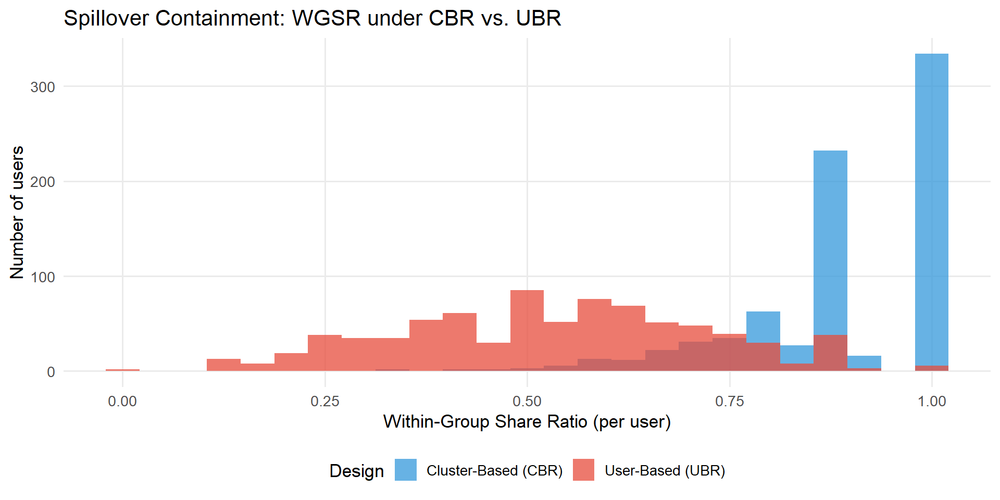
5.2 Switchback Experiments
Switchback experiments randomise by time, not by user. The entire platform operates under one arm for a window, then switches to the other arm for the next window. Because every unit is in the same arm at the same moment, there is no cross-unit interference within a window.
WarningThe Carryover Effect in Switchbacks
The price of eliminating cross-unit interference is introducing cross-time interference. Bojinov, Simchi-Levi, and Zhao (2023) show that positive carryover biases the naive switchback estimator toward zero; negative carryover can flip its sign. The standard mitigation is a washout period, discarding the first 15–30 minutes of data after each switch.
5.3 Ego-Alter / Ego-Network Designs
You identify a set of egos, influential, highly connected users, and randomise treatment at the ego level. You measure outcomes both on egos themselves and on their alters. This gives you a direct effect on egos and a spillover (indirect) effect on alters from a single design.
5.4 Two-Sided / Bipartite Experiments
Randomise treatment separately and independently on each side of the marketplace, creating a 2 \times 2 factorial design:
| Receivers: Control | Receivers: Treatment | |
|---|---|---|
| Senders: Control | Neither side treated | Receiver-side effect only |
| Senders: Treatment | Sender-side effect only | Both sides treated |
5.5 Independent-Set Designs
An independent set in a graph is a subset of nodes with no edges between any pair. Randomising treatment only within an independent set means SUTVA holds exactly for the experimental sample.
WarningThe Cost of Perfect Unbiasedness
Finding the maximum independent set is NP-hard; greedy approximations in dense social graphs often yield 10–20% of the full population, and the discard is not random. In practice, independent-set designs are most valuable as a benchmark to sanity-check cluster-randomised estimates, rather than as a primary design.
5.6 When Randomisation Is Impossible: Synthetic Controls
Synthetic control methods (Abadie, Diamond, and Hainmueller, 2010) construct a “synthetic” version of your treated unit as a weighted combination of untreated donor units. The method’s hidden assumption is that the donor pool is unaffected by the treatment. O’Riordan and Gilligan-Lee (2025) propose a forecasting test: for each candidate donor, fit a model on its pre-intervention data, forecast its post-intervention outcomes, and compare to what actually happened. Systematic forecast failure signals potential donor contamination.
5.7 Choosing the Right Design
%%{init: {'theme':'base','themeVariables':{'primaryColor':'#EBF5FB','primaryTextColor':'#2C3E50','primaryBorderColor':'#3498DB','lineColor':'#3498DB','secondaryColor':'#D5F5E3','tertiaryColor':'#FADBD8'}}}%%
flowchart TD
A["Mechanism of Interference"] --> B["Social / Network"]
A --> C["Marketplace, Two-Sided"]
A --> D["Competition for Shared Resource"]
A --> E["Randomisation Impossible"]
B --> B1["Ego-Alter or<br/>Cluster Randomisation"]
C --> C1["Switchback or<br/>Bipartite Design"]
D --> D1["Cluster on the<br/>Competition Graph"]
E --> E1["Synthetic Control +<br/>Spillover Detection"]
B1 --> F{"Magnitude of Spillover?"}
C1 --> F
D1 --> F
F -- "Small" --> G["Adjust Metrics + Monitor"]
F -- "Medium" --> H["Cluster / Switchback + CUPAC"]
F -- "Large" --> I["Redesign Completely"]
style A fill:#EBF5FB,stroke:#3498DB,stroke-width:2px
style F fill:#FEF9E7,stroke:#F39C12,stroke-width:2px
style G fill:#D5F5E3,stroke:#27AE60,stroke-width:2px
style H fill:#FEF9E7,stroke:#F39C12,stroke-width:2px
style I fill:#FADBD8,stroke:#E74C3C,stroke-width:2px
The single most important question is: what is the actual pathway through which treatment propagates to control? Kuaishou knew their spillover ran through sharing events. Amazon knew theirs ran through auction competition. Design-based containment is preferable to post-hoc regression adjustment because it physically prevents the interference from crossing the treatment boundary, making the result robust to exposure mapping misspecification.
Chapter 6. Textbook vs. Big Tech: The Methodological Contrast
Most A/B tests running right now on your platform were not designed with spillovers in mind. When you realise that network interference is contaminating your estimates, the experiment is already over. This chapter makes the contrast sharp: here is how the textbook handles spillovers, here is where it breaks down on digital platforms, and here is what Meta, Amazon, and Kuaishou do instead.
6.1 The Textbook Approach (Vanilla Exposure Mapping)
The canonical approach comes from Aronow and Samii (2017), with Crépon et al. (2013) providing the most influential field experiment application. For unit i in cluster c(i), the exposure mapping is:
f_i = \frac{1}{n_c - 1} \sum_{j \in c(i),\, j \neq i} D_j
You then run:
Y_i = \alpha + \beta \, D_i + \gamma \, f_i + \delta \, (D_i \times f_i) + \varepsilon_i
Where this works. In Crépon et al. (2013), the clusters were local employment areas and the mechanism was geographic: job seekers in the same market compete for the same vacancies. The cluster matched the interference mechanism perfectly.
Why it fails in Tech: the Blind Proxy Problem. When you move from geography to social networks, three things go wrong simultaneously.
First, it is a blind proxy. “Fraction of treated users in the same city” lumps together close friends, distant acquaintances, and complete strangers. Two users in the same zip code with zero social ties experience zero network spillover from each other, but the textbook approach assigns them the same exposure value. This creates severe measurement error in the key regressor, biasing the spillover coefficient toward zero.
Second, it is post-hoc without fixing the design. The regression tells you that a spillover happened and provides a bias-adjusted estimate. It does not undo the experimental contamination.
Third, it suffers from network endogeneity. If your clusters are defined by social ties, treatment intensity within a cluster is correlated with the underlying network structure, which in turn correlates with outcomes.
WarningThe Textbook Trap
If you apply vanilla exposure mapping to a social network, you are assuming that a user’s outcome is affected equally by a treated stranger in the same city and a treated best friend. The mechanism of interference in tech is the network, not the geography. Your cluster must reflect the actual pathway through which treatment propagates, or you are adding noise to a biased estimate.
The simulation below illustrates this concretely. We generate a network where outcomes depend only on the fraction of treated network neighbours, then compare the geographic cluster proxy to the true network exposure.
Code
library(dplyr)
library(ggplot2)
library(igraph)
set.seed(42)
n <- 500
g <- erdos.renyi.game(n, p = 0.05)
V(g)$geo_cluster <- sample(1:20, n, replace = TRUE)
V(g)$treat <- sample(0:1, n, replace = TRUE)
V(g)$exposure_textbook <- ave(
V(g)$treat,
V(g)$geo_cluster,
FUN = function(x) (sum(x) - x) / (length(x) - 1)
)
V(g)$exposure_network <- sapply(V(g), function(v) {
nbrs <- neighbors(g, v)
if (length(nbrs) == 0) return(0)
sum(V(g)$treat[nbrs]) / length(nbrs)
})
V(g)$outcome <- 2 * V(g)$treat + 3 * V(g)$exposure_network + rnorm(n, sd = 1)
df <- data.frame(
outcome = V(g)$outcome,
treat = factor(V(g)$treat, labels = c("Control", "Treated")),
exp_textbook = V(g)$exposure_textbook,
exp_network = V(g)$exposure_network
)
fit_tb <- lm(outcome ~ as.numeric(treat) + exp_textbook, data = df)
fit_net <- lm(outcome ~ as.numeric(treat) + exp_network, data = df)
cat("=== Textbook (Geographic Cluster) ===\n")=== Textbook (Geographic Cluster) ===Code
cat(sprintf(" Spillover coef (true = 3.0): %.3f\n", coef(fit_tb)["exp_textbook"])) Spillover coef (true = 3.0): -0.218Code
cat("\n=== Network (Fraction of Treated Friends) ===\n")
=== Network (Fraction of Treated Friends) ===Code
cat(sprintf(" Spillover coef (true = 3.0): %.3f\n", coef(fit_net)["exp_network"])) Spillover coef (true = 3.0): 3.380Code
df_long <- bind_rows(
df |> mutate(exposure = exp_textbook,
type = "Textbook: Geographic Cluster Proxy"),
df |> mutate(exposure = exp_network,
type = "Network: Fraction of Treated Friends (True Mechanism)")
)
ggplot(df_long, aes(x = exposure, y = outcome, colour = treat)) +
geom_point(alpha = 0.30, size = 1.0) +
geom_smooth(method = "lm", se = FALSE, linewidth = 1.1) +
facet_wrap(~type, scales = "free_x") +
scale_colour_manual(values = c("Control" = "#6B9BC3", "Treated" = "#E07B54")) +
labs(
title = "Blind Proxy vs. Network Exposure",
subtitle = "Outcome is driven purely by network exposure, geographic clusters add noise",
x = "Exposure Measure",
y = "Outcome",
colour = NULL
) +
theme_minimal(base_size = 12) +
theme(
strip.text = element_text(face = "bold", size = 10),
legend.position = "bottom",
plot.title = element_text(face = "bold")
)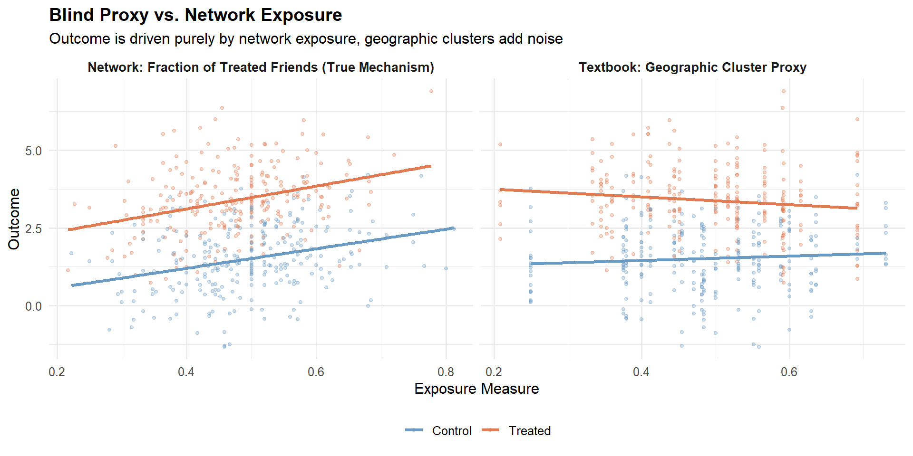
6.2 Meta: Causal Network Motifs
The core idea. Yuan, Altenburger, and Kooti (2021) started from a simple observation: the textbook approach collapses rich network structure into a single number. Two users with the same fraction of treated friends can have very different network environments. Their solution is causal network motifs: local network structures (dyads, open triads, closed triads, open tetrads) combined with the treatment labels of those specific nodes.
The key quantity is the normalised count of each labelled motif for each user, forming an interference vector \mathbf{X}_i where each element lies in [0, 1]. A bespoke tree-based partitioning algorithm discovers which exposure conditions matter most, with three key properties: honest splitting (tree grown on one half, potential outcomes estimated on the other), a positivity constraint before each split, and an inverse-probability-weighted splitting criterion.
The numbers: Facebook’s “Care” reaction experiment. Facebook launched its seventh reaction type in 2020. The naive estimate (difference in means) on other-reaction counts was -0.0293. Using dyad-only motifs (fraction of treated friends), the estimate moved to -0.0174, further from the full-motif estimate. Using the full causal network motif approach, Yuan et al. obtained a global average treatment effect (GATE) of -0.0414. The dyad estimate was not an intermediate step toward the truth, it moved in the wrong direction relative to the naive. This illustrates a fundamental point: a misspecified exposure mapping can worsen estimates, not just fail to improve them. The full motif approach recovered an effect approximately 29% larger in magnitude than the naive DIM.
6.3 Amazon: Treatment Intensity on Competition Graphs
The Amazon approach (Jain et al., 2023) uses the same fraction-of-treated-peers formula as the textbook, but with a fundamentally different cluster definition: bipartite advertiser–keyword graphs where edges encode shared auction competition. The cluster must match the mechanism, in advertising, this means actual competitors, not zip codes.
The contrast with the textbook approach:
| Dimension | Textbook (Aronow & Samii) | Amazon (Jain et al.) |
|---|---|---|
| Data structure | Cross-section, single index i | Implicit panel, double index (i,j) |
| Cluster definition | Administrative / geographic | Constructed from actual mechanism (bipartite graph) |
| Identifying variation | Across units, same experiment | Within and across clusters; shrinks with N_j |
| Heterogeneity controls | Cluster variables as regressors | g(N_j) + Y^0_{ij} (CUPED-style) |
6.4 Kuaishou: Contain the Spillover at the Source
Both Meta and Amazon take a post-hoc stance. Min et al. (2026) at Kuaishou took a more radical position: if you know spillovers exist, change the design. Under user-level randomisation, WGSR was only 49.68%, no post-hoc regression can undo that degree of contamination.
NoteDesign beats regression
Kuaishou’s message is clear: contain the spillover in the design; do not try to fix it in the analysis. Post-hoc adjustment requires you to correctly specify the exposure mapping, which you can never be fully certain about. Design-based containment is robust to misspecification because it physically prevents the interference from crossing the treatment boundary.
6.5 Synthesis: Choosing Your Approach
| Approach | Best For | Core Mechanism | Main Limitation |
|---|---|---|---|
| Textbook (Aronow & Samii, 2017) | Public policy, geographic interference | Fraction of treated in predefined cluster | Blind proxy, ignores network topology |
| Meta (Yuan et al., 2021) | Dense social networks, viral features | Tree-based discovery of motif-based exposure conditions | Computationally intensive; requires pre-treatment network graph |
| Amazon (Jain et al., 2023) | Marketplaces, ads, auctions | Treatment intensity within mechanism-specific clusters | Requires known interference graph; limited to smaller clusters for identification |
| Kuaishou (Min et al., 2026) | Large-scale social platforms | Design-based containment + variance recovery | Requires heavy engineering infrastructure; stable cluster membership needed |
flowchart TD
A["Do you have a pre-treatment<br/>network graph?"] -- "No" --> B["Use Textbook Exposure Mapping<br/>(with caution, verify clusters match<br/>the interference mechanism)"]
A -- "Yes" --> C{"What is the mechanism<br/>of interference?"}
C --> D["Social Contagion / Viral<br/>(sharing, messaging, reactions)"]
C --> E["Competition / Auctions<br/>(advertisers, sellers, products)"]
C --> F["General Network Interference<br/>(mechanism unclear or mixed)"]
D --> G{"Can you change the<br/>randomisation unit?"}
G -- "Yes" --> D1["Kuaishou:<br/>Balanced Louvain + CUPAC"]
G -- "No" --> F1["Meta:<br/>Causal Network Motifs"]
E --> E1["Amazon:<br/>Mechanism-Specific Clusters<br/>(build from actual competition graph)"]
F --> F1
Chapter 6 placed the methodological choices in context. Chapter 7 turns to the post-hoc analytical toolkit for valid causal inference when design wasn’t enough.
Chapter 7. Causal Inference After the Experiment
Chapters 5 and 6 gave you the design toolkit. That logic breaks down in two situations: the experiment is already done, or the spillover is between metrics, not between users. This chapter covers four post-experiment methods: Doubly Robust estimation adapted for spillover adjustment, Causal Forests for heterogeneous spillover effects, Off-Policy Evaluation with CVaR safety constraints, and non-parametric estimators from Aronow and Samii (2017).
7.1 Doubly Robust Estimation with Spillovers
The DR estimator with spillover adjustment. The standard DR estimator extends naturally to the network interference setting by conditioning on an exposure mapping E_i:
\hat\tau_{DR} = \frac{1}{n}\sum_{i=1}^n \left[ \frac{T_i - \hat e(X_i, E_i)}{\hat e(X_i, E_i)(1 - \hat e(X_i, E_i))} \left(Y_i - \hat m_{T_i}(X_i, E_i)\right) + \hat m_1(X_i, E_i) - \hat m_0(X_i, E_i) \right]
where \hat e(X_i, E_i) is the propensity score conditional on covariates and neighbourhood exposure, and \hat m_t(X_i, E_i) is the estimated potential outcome under treatment t.
NoteWhy DR is robust to model misspecification
The IPW term corrects the regression when the outcome model is wrong, and the regression term corrects the IPW when the propensity model is wrong. If you are right about at least one of them, the estimator converges to the truth. Wang and Xiao (2025) implement this approach in consumer finance using L2-regularised logistic regression for the propensity model and gradient-boosted decision trees for the outcome model.
Practical implementation. Three decisions matter most. The exposure mapping needs to be chosen before you look at outcomes. The propensity model should be L2-regularised logistic regression or gradient boosting with cross-fitting. Score clipping is non-negotiable: clip propensity scores to [0.01, 0.99] before computing the IPW term.
7.2 Causal Forests for Heterogeneous Spillover Effects
Causal Forests (Athey and Wager, 2019) estimate the Conditional Average Treatment Effect \tau(x) = \mathbb{E}[Y(1) - Y(0) \mid X = x]. Including exposure variables E_i as features allows CATE estimates to vary along both individual covariates and network exposure simultaneously.
7.3 Off-Policy Evaluation and Safety Constraints
The cross-metric spillover trap. Wang and Xiao (2025) find that promotions increased loan conversion rates by +12.3 percentage points and increased 60-day default rates by +1.8 percentage points (p < 0.01). Standard A/B test dashboards that evaluate metrics in isolation will walk you off a cliff.
WarningThe Seesaw condition revisited
Li et al. (2025) show formally that seesaw experimentation occurs when -1 \leq \rho < 2\alpha M(\alpha) - 1, where \alpha = |\mu|/\sigma and M(\alpha) is the Mills ratio. The optimal hurdle rate is z^* = \frac{\rho - 1}{\rho + 1}\mu, derived under the symmetric Gaussian model. Pre-registering this threshold before unblinding is essential, setting it post-hoc relabels researcher degrees of freedom as rigor.
Off-Policy Evaluation with CVaR constraints. OPE uses logged data from one policy (the original 50/50 randomisation) to evaluate policies you didn’t implement.
Step 1: CATE estimation for both metrics. Train causal forests separately for conversion and default. Wang and Xiao (2025) found clear heterogeneity: users with short credit histories and borrowing behaviour spanning four or more platforms exhibit consistently high CATE values for default.
Step 2: Doubly Robust OPE.
\hat V^{DR}(\pi) = \frac{1}{n} \sum_{i=1}^n \left[ \hat q_{\pi(X_i)}(X_i) + w_i \cdot (Y_i - \hat q_{T_i}(X_i)) \right], \quad w_i = \frac{\pi(T_i \mid X_i)}{\hat b(T_i \mid X_i)}
Step 3: CVaR safety constraint.
\Pi^{safe} = \left\{\pi \in \Pi : \hat R_{risk}(\pi) \leq \gamma \right\}, \quad \hat R_{risk}(\pi) = \text{CVaR}_\alpha\left[Y_{risk} \mid \pi(X)\right]
The numbers. The optimal policy excludes the top 1.8% of users by risk CATE. The default rate falls from 8.5% to 7.7%, a 9.7% relative reduction, while conversion levels are maintained.
R code: OPE with CVaR constraint.
Code
library(grf)
library(dplyr)
library(ggplot2)
set.seed(123)
n <- 5000
X <- matrix(rnorm(n * 5), n, 5)
tau_conv <- 0.1 + 0.2 * X[,1] - 0.15 * X[,3]
tau_def <- 0.02 - 0.3 * X[,2] + 0.1 * X[,4]
W <- rbinom(n, 1, 0.5)
Y_conv <- 0.5 + tau_conv * W + rnorm(n, 0, 0.1)
Y_def <- 0.08 + tau_def * W + rnorm(n, 0, 0.02)
forest_def <- causal_forest(X, Y_def, W,
num.trees = 2000,
honesty = TRUE,
seed = 42)
cate_def <- predict(forest_def, X)$predictions
risk_threshold <- quantile(cate_def, 0.982)
policy <- as.integer(cate_def <= risk_threshold)
forest_outcome <- regression_forest(cbind(X, W), Y_def, seed = 42)
q_hat_1 <- predict(forest_outcome, newdata = cbind(X, rep(1, n)))$predictions
q_hat_0 <- predict(forest_outcome, newdata = cbind(X, rep(0, n)))$predictions
b_hat <- 0.5
pi_treated <- policy
w_i <- (pi_treated * W + (1 - pi_treated) * (1 - W)) / b_hat
w_i_clipped <- pmin(w_i, 20)
q_pi <- ifelse(pi_treated == 1, q_hat_1, q_hat_0)
v_dr_safe <- mean(q_pi + w_i_clipped * (Y_def - ifelse(W == 1, q_hat_1, q_hat_0)))
v_dr_full <- mean(q_hat_1)
cat(sprintf("DR-OPE estimated default rate | full rollout: %.4f\n", v_dr_full))DR-OPE estimated default rate | full rollout: 0.0985Code
cat(sprintf("DR-OPE estimated default rate | safe policy: %.4f\n", v_dr_safe))DR-OPE estimated default rate | safe policy: 0.0845Code
cat(sprintf("Relative reduction in default: %.1f%%\n",
100 * (v_dr_full - v_dr_safe) / v_dr_full))Relative reduction in default: 14.1%Code
cat(sprintf("Users excluded: %d of %d (%.1f%%)\n",
sum(policy == 0), n, 100 * mean(policy == 0)))Users excluded: 90 of 5000 (1.8%)Code
df_eval <- data.frame(
cate_default = cate_def,
policy = factor(policy,
levels = c(0, 1),
labels = c("Excluded (high-risk)", "Targeted (safe)"))
)
ggplot(df_eval, aes(x = cate_default, fill = policy)) +
geom_density(alpha = 0.55, colour = "white", linewidth = 0.3) +
geom_vline(xintercept = risk_threshold,
linetype = "dashed", colour = "#333333", linewidth = 0.8) +
annotate("text", x = risk_threshold + 0.005, y = 12,
label = "CVaR threshold\n(top 1.8% excluded)",
hjust = 0, size = 3.2, colour = "#333333") +
scale_fill_manual(values = c("Excluded (high-risk)" = "#E74C3C",
"Targeted (safe)" = "#2B7A78")) +
labs(
title = "CATE Distribution for Default Risk: Safe Targeting vs Full Rollout",
subtitle = "Users to the right of the dashed line are excluded under the CVaR-constrained policy",
x = "Estimated CATE for 60-day Default",
y = "Density",
fill = "Policy Decision"
) +
theme_minimal(base_size = 13) +
theme(legend.position = "bottom",
plot.title = element_text(face = "bold", size = 13),
plot.subtitle = element_text(colour = "grey40", size = 10),
panel.grid.minor = element_blank())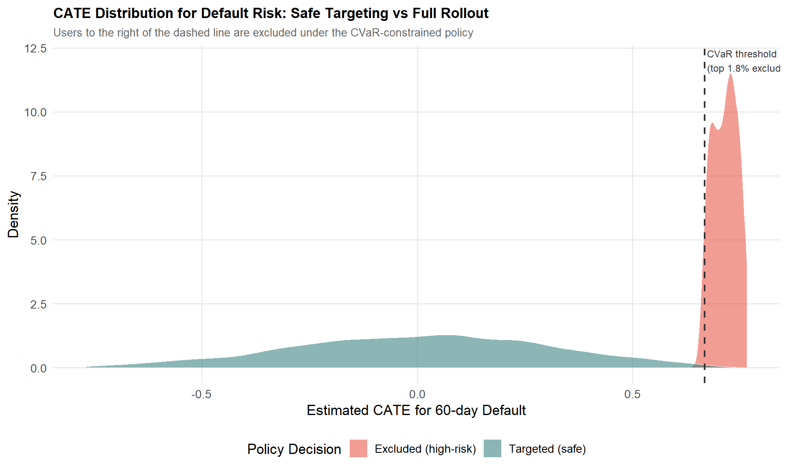
7.4 Non-Parametric Estimators: Hajek and Aronow & Samii
Exposure mappings and inclusion probabilities. For each unit i and exposure condition d \in \mathcal{D}, you need the inclusion probability \pi_i(d) = \mathbb{P}(E_i = d). Because this is generally intractable analytically, Aronow and Samii (2017) estimate it by Monte Carlo simulation: re-run the randomisation procedure R times and record whether unit i falls in condition d:
\hat\pi_i(d) = \frac{\sum_r \mathbf{1}[D_i^{(r)} = d] + 1}{R + 1}
The Horvitz-Thompson estimator.
\hat\tau(d, d') = \frac{1}{n}\sum_{i=1}^n \left[ \frac{Y_i \cdot \mathbf{1}(E_i = d)}{\pi_i(d)} - \frac{Y_i \cdot \mathbf{1}(E_i = d')}{\pi_i(d')} \right]
The Hajek estimator normalises by the sum of weights:
\hat\tau_{Hajek}(d, d') = \frac{\displaystyle\sum_i \frac{Y_i \cdot \mathbf{1}(E_i = d)}{\pi_i(d)}}{\displaystyle\sum_i \frac{\mathbf{1}(E_i = d)}{\pi_i(d)}} - \frac{\displaystyle\sum_i \frac{Y_i \cdot \mathbf{1}(E_i = d')}{\pi_i(d')}}{\displaystyle\sum_i \frac{\mathbf{1}(E_i = d')}{\pi_i(d')}}
The Hajek estimator is slightly biased but typically has lower variance. Yuan et al. (2021) demonstrate this in the Facebook “Care Reaction” rollout: the Hajek-based estimate was -0.0414 \pm 0.0049, compared to the naive DIM of -0.0293 \pm 0.0021.
NoteThe Hajek trade-off in practice
Prefer Hajek when working with fine-grained motif conditions and sufficient sample size to estimate inclusion probabilities reliably. If sample size is very small or exposure conditions are well-populated everywhere, Horvitz-Thompson is unbiased and there is no need to pay the bias cost. When in doubt, compute both and compare.
7.5 Choosing the Right Method
flowchart TD
A["Post-Experiment Analysis Goal"] --> B{"What is the spillover type?"}
B --> C["Cross-Unit Interference"]
B --> D["Cross-Metric Spillover<br/>(e.g. conversion vs. default)"]
B --> E["Heterogeneous Effects<br/>for Targeting"]
C --> C1["Doubly Robust +<br/>Exposure Mapping"]
C --> C2["Aronow & Samii IPW<br/>or Hajek"]
D --> D1["OPE with CVaR<br/>Constraint"]
D --> D2["Multi-Metric<br/>Hurdle Rate"]
E --> E1["Causal Forests<br/>for CATE"]
E --> E2["Policy Simulation +<br/>Safe Targeting"]
C1 --> F{"Need minimal<br/>assumptions?"}
C2 --> F
F -- "Yes" --> G["Hajek Estimator<br/>(small bias, low variance)"]
F -- "No, want efficiency" --> H["DR Estimator<br/>(double robustness)"]
E1 --> I["Include E_i as<br/>forest features"]
E2 --> D1
The four methods in this chapter are a pipeline, not alternatives. Start with DR estimation to get a clean ATE adjusted for spillover exposure. Use Causal Forests to decompose that ATE into a CATE distribution. Apply OPE with CVaR constraints to evaluate safe targeting policies without a new rollout. When you need inference under minimal assumptions, Hajek gives you the most robust standard errors.
PART III: THE PRACTICE
Chapter 8. A Practical Framework: Choosing the Right Approach
This chapter cures analysis paralysis. It gives you four practical tools: the Decision Tree, the Implementation Checklist, the “Minimum Viable Rigor” heuristic, and the When-Not-to-Correct cost-benefit analysis.
8.1 The Decision Tree
flowchart TD
A["Suspected Spillover?"] -- "No" --> Z["Standard A/B Test + CUPED"]
A -- "Yes" --> B{"What is the primary mechanism?"}
B -- "Social Contagion / Network" --> C{"Can you change the design?"}
C -- "Yes" --> C1["Cluster Randomisation<br/>(Balanced Louvain if large scale)"]
C -- "No (Post-hoc)" --> C2["Causal Network Motifs<br/>or Exposure Mapping"]
B -- "Competition / Auctions<br/>(Ads, Search, Marketplace)" --> D{"Can you define the<br/>competition graph?"}
D -- "Yes" --> D1["Cluster on Competition Graph<br/>(Spectral Co-clustering)"]
D -- "No" --> D2["Treatment Intensity Regression<br/>(Amazon approach)"]
B -- "Two-Sided Marketplace<br/>(Riders/Drivers, Senders/Receivers)" --> E["Switchback or<br/>Bipartite Design"]
B -- "Cross-Metric Spillover<br/>(Seesaw: Conversion vs Risk)" --> F["Implement Positive<br/>Hurdle Rate (z*)"]
C1 --> G{"Check WGSR or<br/>Treatment Intensity"}
D1 --> G
G -- "Spillover contained" --> H["Proceed with Analysis"]
G -- "Still leaking" --> I["Add CUPAC for<br/>Variance Recovery"]
Walking the tree. For social contagion, invest in cluster randomisation if the design can still be changed; use causal network motifs or Hajek-based exposure mapping if the experiment already ran. For competition and auctions, the Amazon case (Section 9.2) shows spillovers can reverse the sign of the naive estimate, assume spillovers are large until proven otherwise. For cross-metric spillovers, pre-register the hurdle rate z^* before unblinding the experiment; deciding it post-hoc relabels researcher degrees of freedom as rigor.
NoteAfter clustering: always check the diagnostic
Check your diagnostic metric, WGSR for social experiments, treatment intensity variance for competitive ones. If spillover is still leaking after clustering, add CUPAC.
8.2 The Implementation Checklist
Pre-Experiment.
- Map the interference graph. Identify the mechanism: social, competitive, or resource-based. This determines everything downstream.
- Choose the randomisation unit. User (when spillover is plausibly negligible), Cluster (social or competitive graphs), Time (switchback), or Bipartite (two-sided marketplace).
- Define the primary spillover diagnostic metric before the experiment starts. For social networks: WGSR ≥ 0.85. For competitive settings: sufficient variation in treatment intensity.
- Pre-register the hurdle rate if cross-metric spillovers are suspected. Set z^* in advance using historical estimates of \rho and \mu.
During Experiment.
- Monitor the diagnostic metric daily. Is WGSR holding above 0.85? Is treatment intensity varying enough across clusters?
- Watch guardrail metrics for seesaw signals. Primary metric up, secondary metric down, set automated alerts for this pattern.
Post-Experiment.
- Run the placebo test. Regress pre-period outcomes on your spillover diagnostic. Null results validate the exogeneity assumption.
- Apply the appropriate estimator if bias is detected. Doubly Robust when unsure whether the propensity or outcome model is correctly specified. Hajek with Monte Carlo inclusion probabilities for exposure-mapping designs. CUPAC for variance recovery after cluster randomisation.
- Report both the “Naive ATE” and the “Spillover-Adjusted ATE” to stakeholders, always. The gap between the two is the empirical price tag of network interference.
8.3 The “Minimum Viable Rigor”
Level 1, Basic (an afternoon’s work). Run a standard user-level A/B test. Post-hoc, compute the WGSR or treatment intensity using whatever cluster or network data you already have. If the diagnostic is low (WGSR comfortably below 0.85, or a small and insignificant intensity coefficient), report the naive ATE with a caveat. This already puts you ahead of most teams.
Level 2, Intermediate (a day or two). If Level 1 shows meaningful spillover, re-run with simple clustering, geographic regions or random buckets of users hashed into roughly 1,000 clusters. Even naive random clustering tends to push WGSR meaningfully above ~0.5. If WGSR clears 0.85, you’re done.
Level 3, Advanced (one to two weeks). Reserve this for features that are the network mechanism: a new sharing feature, a recommender change that drives social contagion, or a pricing algorithm that reshuffles auction dynamics. Invest in the full pipeline, Balanced Louvain (or spectral co-clustering for competitive graphs) plus CUPAC for variance recovery.
NoteThe “Good Enough” Threshold
Moving from user-level randomisation (WGSR ≈ 0.50) to cluster-based randomisation (WGSR ≈ 0.94–0.95) reduced estimation bias by 87–89% in Min et al.’s (2026) simulation setting. A WGSR of 0.85 or higher captures the large majority of that bias reduction.
The key insight: the first step, from no clustering to any clustering, captures most of the value. Going from Balanced Louvain at 90% WGSR to 96% WGSR is a refinement. Going from 50% to 85% is what actually moves your bias estimate.
8.4 When NOT to Correct for Spillovers
The Variance vs. Bias Trade-off. Cluster randomisation reduces bias but inflates variance through the Design Effect (DEFF):
\text{DEFF} = 1 + (m - 1) \cdot \text{ICC}
where m = n_{\text{users}} / n_{\text{clusters}} is the average cluster size and ICC is the Intra-Cluster Correlation.
Code
library(ggplot2)
calculate_ess <- function(n_users, n_clusters, icc) {
m <- n_users / n_clusters
deff <- 1 + (m - 1) * icc
n_users / deff
}
n_users <- 100000
n_clusters <- 1000
icc_values <- seq(0.01, 0.15, by = 0.01)
ess_results <- sapply(icc_values, function(icc) calculate_ess(n_users, n_clusters, icc))
plot_data <- data.frame(
ICC = icc_values,
ESS_Percent = (ess_results / n_users) * 100
)
ggplot(plot_data, aes(x = ICC, y = ESS_Percent)) +
geom_line(color = "#E74C3C", linewidth = 1.2) +
geom_point(color = "#E74C3C") +
labs(
title = "Effective Sample Size (ESS) Loss due to Clustering",
subtitle = "n_users = 100,000, n_clusters = 1,000 (avg. cluster size = 100)",
x = "Intra-Cluster Correlation (ICC)",
y = "ESS as % of Total Users"
) +
theme_minimal() +
geom_hline(yintercept = 80, linetype = "dashed", alpha = 0.5) +
annotate("text", x = 0.135, y = 83, label = "80% ESS threshold", size = 3)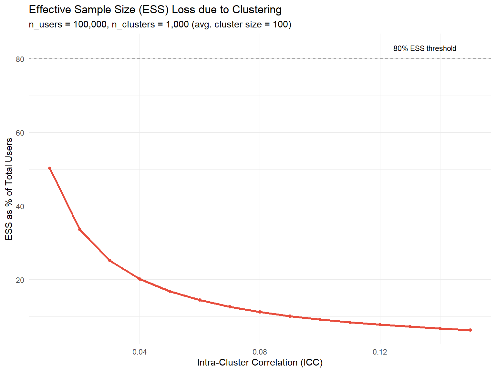
Three scenarios where you should accept the bias.
The effect size is massive. If your naive ATE is +50% and your best estimate of the spillover bias is a 10-percentage-point overstatement, the launch decision doesn’t change.
The cost of delay is high. If building a social interaction graph and running Balanced Louvain takes two weeks of engineering time, and that delay costs more in foregone revenue than the bias you’d correct, the rational choice may be to ship on the naive estimate and monitor long-term metrics.
The ICC is near zero. If ICC < 0.01, the design effect is close to 1 and variance inflation from clustering is negligible, signalling that spillovers are probably small as well.
WarningThe Competitive Settings Exception
In competitive environments (ads, search, dynamic pricing), spillovers can reverse the sign of the naive estimate, as in the Amazon case, where \tau^{naive} \approx +47 and \tau^{total} \approx -946. None of the three accept-the-bias scenarios above apply by default when units compete for shared resources. Test for spillovers explicitly in every experiment involving auctions, ranking systems, or shared inventory.
Now that you have the decision tree, the checklist, the minimum-viable-rigor framework, and the cost-benefit lens, the next step is to see how these choices play out with real data and real deadlines.
Chapter 9. Three Case Studies in the Wild
Over the last eight chapters, you’ve built a complete mental model of spillovers. This chapter walks through three case studies that apply the full toolkit: a short-video platform wrestling with social contagion, an e-commerce giant discovering that its advertisers were quietly sabotaging each other, and a consumer finance company learning that “more conversions” can be a Trojan horse for hidden risk.
Each case ends with a number that should make you pause: a true effect that is several times larger than what a naive A/B test reported, sometimes with the opposite sign.
9.1 Kuaishou: Containing Social Contagion at Scale
The setup. Kuaishou is one of the largest short-video platforms in the world. The team wanted to test a new set of recommender and UI strategies designed to make users share videos more often. Sharing is, by definition, a social action, if a treated user shares a video with a control user, the treatment has just reached into the control group’s experience.
WarningThe core problem
Under standard User-Based Randomisation (UBR), treated users share more, but a meaningful fraction of those shares land on control users. The control group is contaminated, biasing the estimated effect toward zero, you end up underestimating how good your feature really is.
The design. The Kuaishou team built a multi-behaviour social graph combining five types of relationships (follow, comment, like, share, and message) with edge weights:
W_{ij} = \sum_{d=1}^{D} \omega_d \cdot s^{(d)}_{ij}
They then ran Balanced Louvain (Section 5.1) with \alpha = 0.3 and N_{\max} = 250{,}000. Applied to roughly 370 million users, this produced 73,340 clusters with an average size of about 5,000 users and overall modularity of 0.466.
The numbers. Under UBR, WGSR was 49.68%, essentially a coin flip. Under Cluster-Based Randomisation (CBR), WGSR jumped to 90.39%.
| Method | WGSR (%) | Share Count (%) | Share Penetration (%) | Message Penetration (%) | LT-7 (%) |
|---|---|---|---|---|---|
| UBR | 49.68 | +7.758** | +4.968** | +1.888** | +0.049* |
| CBR (Balanced Louvain) | 90.39 | +26.612** | +14.774** | +4.983** | +0.133** |
(* denotes p < 0.05; ** denotes p < 0.01; from Table 1 of Min et al., 2026)
The true effect of the feature was 3.4 times larger than what the naive experiment reported. Most strikingly, the 7-day retention (LT-7) effect was statistically insignificant under UBR (p = 0.484) and significant under CBR (p < 0.01). Spillover contamination had completely masked the existence of a long-term retention benefit.
ImportantWhy This Matters
If Kuaishou had relied on the UBR experiment alone, they would have concluded the feature had no meaningful effect on retention, potentially shelving a launch that meaningfully improved long-term engagement. Spillover didn’t just bias the magnitude, it hid the existence of an effect entirely.
The analysis: CUPAC. Cluster randomisation reduces effective independent units from millions to ~73K clusters. CUPAC (Section 5.1) with cross-fitted predictions on control buckets achieved 93.8% variance reduction, turning what was an inconclusive DIM estimate (p = 0.484) into a statistically significant finding (p = 0.048).
Actionable lessons from Kuaishou. WGSR is your first diagnostic, check it before and during the experiment. Balanced Louvain’s dual mechanism (soft penalty + hard constraint) is necessary at scale: the soft penalty alone cannot guarantee size control, and the hard constraint alone produces higher variance. CUPAC is not optional when variance inflation from clustering is a concern.
9.2 Amazon Ads: The Sign-Reversed Spillover in Auctions
The setup. Amazon ran a five-week experiment introducing budget recommendations for new advertiser campaigns. The design: 50/50 split, 111,305 advertisers, across 3,197 clusters built from advertiser–keyword bipartite graphs.
WarningThe core problem
If the budget recommendation feature makes treated advertisers bid more aggressively, they don’t just improve their own outcomes, they push control advertisers out of the auctions they’re competing in. The spillover is negative: control advertisers competing against treated ones do worse than control advertisers competing against other controls.
The detection. The Amazon team (Jain et al., 2023) built a bipartite graph of advertisers and keywords and used spectral co-clustering to partition 111,305 advertisers into 3,197 clusters. They estimated:
Y_{ij} = \alpha + \beta T_{ij} + f(T^{intensity}_{ij}) + g(N_j) + \theta Y^0_{ij} + \epsilon_{ij}
The result. Table 1 of Jain et al. (2023) for Metric 1:
| Effect | Estimate | Significance |
|---|---|---|
\hat\tau^{direct} (treat) |
+47.26 | p = 0.47 (not significant) |
Spillover (treat_intensity) |
−993.25 | p < 0.01 |
| \hat\tau^{total} (flywheel effect) | −945.99 | p = 0.01 |
| Control group mean | 7,093 | — |
A naive A/B test would report a small, non-significant positive effect. The spillover-aware analysis reveals the true \tau^{total} is −945.99, representing 13% of the control group mean and pointing in the opposite direction. A launch decision based on the naive estimate would have been wrong, not just imprecise, but pointing the wrong way.
What’s the mechanism? The budget recommendation feature made treated advertisers bid more aggressively. In the real world, where all advertisers eventually get this feature, those gains cancel out almost entirely, because everyone is bidding more aggressively against everyone else. The “improvement” was a zero-sum reallocation of auction wins, not genuine value creation.
Validation. The placebo test (regressing pre-period outcomes on treatment intensity) was null across all nine metrics. The permutation test placed the observed spillover coefficient at p = 0.006. Robustness checks across functional forms and covariate controls confirmed direction and significance.
Actionable lessons from Amazon. In competitive settings, always assume spillovers are large until proven otherwise. The cluster definition must match the mechanism, a zip code would have been noise; the keyword bipartite graph captured the actual interference pathway. The identifying variation comes primarily from small clusters, which limits generalisability to larger competitive groups.
9.3 Consumer Finance: Taming the Cross-Metric Seesaw
The setup. A consumer finance company running marketing promotions to drive loan applications. Promotions are delivered via individualised SMS and app pushes, SUTVA across users is actually plausible here. The spillover runs not between units but between metrics.
WarningThe core problem: Spillovers between metrics, not between units
This is the Seesaw: a firm optimises hard on loan conversion and ships every improvement that moves that metric. But each “win” carries a hidden cost on default risk. The test is correctly designed and analysed. The decision rule is wrong.
The data. Wang and Xiao (2025) used a stratified RCT spanning over 1.186 million customers across 10 rounds of promotions between 2020 and 2023. Treatment: targeted promotional SMS and in-app pushes. Response window: 7 days. Credit behaviour tracked over 60 days.
The numbers. Using a Doubly Robust estimator (L2-regularised logistic propensity + gradient-boosted outcome model, propensity clipping to [0.01, 0.99]):
- Loan conversion rate: +12.3 percentage points
- 60-day default rate: +1.8 percentage points (p < 0.01)
The promotions brought in riskier borrowers: customers more responsive to marketing stimuli but less likely to repay.
The analysis: heterogeneity in risk. A Causal Forest on default risk revealed clear heterogeneity. Customers with credit histories under 6 months and borrowing activity across 4+ platforms showed consistently elevated default CATE values. Customers in the top credit score quartile or with stable high income showed near-zero or negative default CATE.
The OPE with CVaR constraint. The team designed a selective targeting policy excluding customers above a default CATE threshold, evaluated via DR-OPE and Switch-DR on logged data. The optimal policy excluded just the top 1.8% of customers by predicted risk CATE:
- Default rate: from 8.5% to 7.7% (a 9.7% relative reduction)
- Conversion levels: maintained
NoteKey Insight
A tiny, surgical exclusion, less than 2% of the targeted population, eliminated nearly a tenth of the incremental default risk, with negligible cost to the metric everyone was optimising. The spillover here wasn’t between users; it was between metrics, hidden inside the same population the whole time.
Actionable lessons from consumer finance. Cross-metric spillovers are the most dangerous type because they don’t bias any estimate, you walk off a cliff with full statistical confidence. The DR estimator is the right baseline for settings where you want robustness to model misspecification. Causal Forests with default CATE as the target should be part of every high-stakes promotion analysis in credit settings. The consistency between DR-OPE and Switch-DR estimates is your key robustness check.
9.4 Common Patterns and Final Takeaways
flowchart TD
A["Naive A/B Test"] --> B{"What is the spillover?"}
B --> C["Social Contagion<br/>(Kuaishou)"]
B --> D["Auction Competition<br/>(Amazon)"]
B --> E["Cross-Metric Risk<br/>(Finance)"]
C --> C1["Design: Balanced Louvain<br/>Detect: WGSR > 0.85"]
D --> D1["Detect: Treatment Intensity<br/>on Competition Graph"]
E --> E1["Analyse: Causal Forest +<br/>OPE with CVaR"]
C1 --> F["True Effect: 3.4x Larger"]
D1 --> G["True Effect: Opposite Sign"]
E1 --> H["Risk: −9.7% Default"]
F --> I["Redefine the Unit<br/>of Analysis"]
G --> I
H --> I
The common thread. In all three cases, the fix was never to adjust the naive number with a correction factor. The fix was to redefine the unit of analysis: Kuaishou moved from individual user to social cluster; Amazon moved from individual advertiser to competitive cluster; the finance team moved from single-metric optimisation to joint conversion-risk policy.
Code
library(ggplot2)
library(dplyr)
df_summary <- data.frame(
Case = c("Kuaishou (Share Count)", "Amazon Ads (Primary Metric)", "Finance (Default Rate)"),
Type = c("Positive Spillover", "Negative Spillover", "Cross-Metric Spillover"),
Naive_Estimate = c(7.76, 47.26, 8.5),
True_Estimate = c(26.61, -945.99, 7.7)
)
df_long <- df_summary %>%
tidyr::pivot_longer(cols = c(Naive_Estimate, True_Estimate),
names_to = "Estimate_Type", values_to = "Value") %>%
mutate(Estimate_Type = recode(Estimate_Type,
"Naive_Estimate" = "Naive (Standard A/B Test)",
"True_Estimate" = "Adjusted (Spillover-Aware)"))
ggplot(df_long, aes(x = Case, y = Value, fill = Estimate_Type)) +
geom_col(position = position_dodge(width = 0.7), width = 0.6) +
geom_hline(yintercept = 0, color = "grey30", linewidth = 0.4) +
geom_text(aes(label = round(Value, 1)),
position = position_dodge(width = 0.7), vjust = -0.4, size = 3.5) +
scale_fill_manual(values = c("Naive (Standard A/B Test)" = "#A0AEC0",
"Adjusted (Spillover-Aware)" = "#2C5282")) +
labs(title = "Naive vs. Adjusted Estimates Across Three Spillover Case Studies",
subtitle = "Each case shows a naive A/B test estimate that is dramatically wrong\nin magnitude, direction, or both",
x = NULL, y = "Estimate (case-specific units, see text)",
fill = NULL,
caption = "Sources: Min et al. (2026); Jain et al. (2023); Wang & Xiao (2025)") +
theme_minimal(base_size = 13) +
theme(legend.position = "top",
plot.title = element_text(face = "bold"),
axis.text.x = element_text(angle = 15, hjust = 1))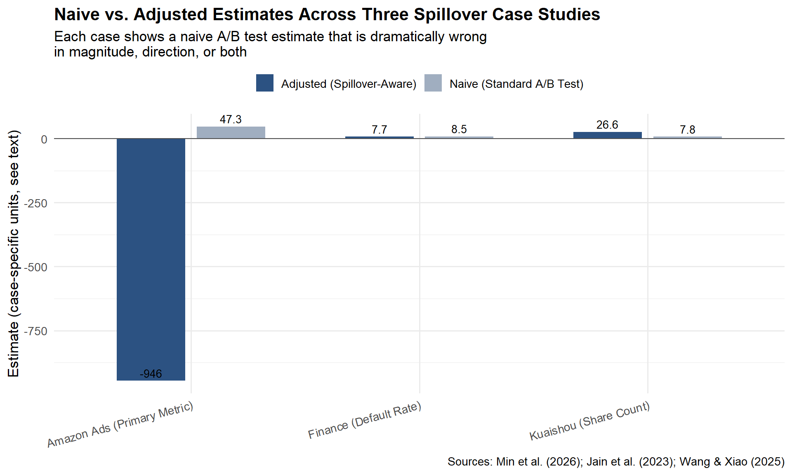
Part IV: Five Questions for Your Analytics Team
Before you run your next experiment, sit down with your analytics team and walk through these five questions. They take ten minutes. They can save you from shipping a feature that looks like a win but behaves like a loss.
1. What is the mechanism of interference?
Not whether there is interference, in most platform settings, there is. The question is how units influence each other. Is it social contagion? Competitive displacement? Shared inventory? Or cross-metric risk, where the treatment shifts one KPI and the spillover shows up in a completely different metric? The mechanism determines everything that follows: the detection strategy, the experimental design, the estimator, and the decision rule.
2. How much of my treatment leaks across the boundary?
Quantify the leakage. On Kuaishou, only 49.68% of social interactions stayed within the same experimental group under user-level randomisation. On Amazon, the spillover coefficient was large enough to reverse the sign of the estimated effect. Run a treatment-intensity regression (Chapter 4); compute the WGSR for your randomisation unit; check whether control-group outcomes shift when treatment intensity in neighbouring units changes.
3. What is the cost of getting the decision wrong?
Not all spillovers require a redesign. If the cost of a false positive is low and the opportunity cost of delay is high, you may accept the bias. But in the Amazon case, the correct and naive estimates pointed in opposite directions. That is not a precision problem, it is a strategic error. Know your downside before deciding how much methodological complexity to invest in.
4. Does my experimental design match the mechanism?
Social contagion calls for graph cluster randomisation. Auction competition calls for competitive clustering and exposure mapping. Shared inventory calls for geographic or temporal switchback designs. Cross-metric risk calls for joint outcome measurement, not just a different randomisation unit. If your design does not match the mechanism, post-hoc adjustment will not fully rescue the estimate.
5. What am I not measuring?
The most dangerous spillover is the one you never look for. Wang and Xiao (2025) showed that a marketing promotion that lifted conversions also increased credit risk, but only for customers near the eligibility boundary. The risk spillover was invisible if you only looked at conversion rates or aggregate default rates. It was only detectable when you modelled the conditional heterogeneity. Before concluding that an experiment is clean, ask: what metrics are we not tracking? What subpopulations are we not segmenting? What time horizon are we not observing?
Conclusion: Embrace the Complexity
Nine chapters ago, we started with a simple promise: A/B testing is the gold standard for causal inference, if its assumptions hold. SUTVA is the quiet assumption doing most of the load-bearing work. What this series has tried to show you is that SUTVA is not a technicality you can footnote away.
In marketplaces, social networks, and any system where units share resources, attention, or risk pools, SUTVA is violated by design, not by accident. Pretending it doesn’t exist doesn’t make your experiments simpler; it makes them wrong, and wrong with a layer of statistical confidence that makes the error harder to catch.
Five final takeaways.
SUTVA is violated in marketplaces and social networks, always. The question is never “is there interference,” but “how much, and does it matter for this decision.”
Spillovers can overestimate, underestimate, or invert the effect. Kuaishou’s spillover hid a real win. Amazon’s spillover reversed a real loss into an apparent win. Finance’s spillover was invisible because it lived in a different metric entirely.
Choose the design based on the mechanism, not convenience. Social contagion calls for graph clustering. Auction competition calls for competitive clustering and exposure mapping. Cross-metric risk calls for joint policy evaluation.
Combine methods: design (cluster, switchback) + analysis (DR, CUPAC, motifs). None of these three case studies relied on a single technique. Containment by design and correction by analysis are complements, not substitutes.
80% capture is better than theoretical perfection, but know what you’re leaving on the table. Kuaishou’s clusters didn’t reach WGSR = 1.0. Amazon’s clusters assumed no inter-cluster spillovers. The finance team’s CATE model is only as good as its covariates. None of this is perfect, but every team could tell you exactly where their remaining blind spots were.
Your next A/B test. If you only take one thing away from this entire series, make it this question, asked of every experiment you run from now on:
“Who, or what, is my treatment affecting without me knowing?”
Is it a user’s neighbour in a social graph? A competitor in an auction? A different metric on the same dashboard that nobody’s looking at? The answer might be “nobody, nothing, SUTVA holds here, ship it.” That’s a perfectly fine answer, if you’ve actually checked. But if the answer is “I’m not sure,” you now have nine chapters of tools to find out.
Bibliography
Abadie, A., Diamond, A., and Hainmueller, J. (2010). Synthetic control methods for comparative case studies: Estimating the effect of California’s tobacco control program. Journal of the American Statistical Association, 105(490), 493–505.
Aronow, P. M., and Samii, C. (2017). Estimating average causal effects under general interference, with application to a social network experiment. Annals of Applied Statistics, 11(4), 1912–1947.
Athey, S., and Wager, S. (2019). Estimating treatment effects with causal forests: An application. Observational Studies, 5(2), 37–51.
Azevedo, E. M., Deng, A., Montiel Olea, J. L., Rao, J., and Weyl, E. G. (2020). A/B testing with fat tails. Journal of Political Economy, 128(12), 4614–4672.
Baird, S., Bohren, J. A., McIntosh, C., and Özler, B. (2018). Optimal design of experiments in the presence of interference. Review of Economics and Statistics, 100(5), 844–860.
Berman, R., Pekelis, L., Scott, A., and Van den Bulte, C. (2018). p-hacking in A/B testing. SSRN Working Paper. https://ssrn.com/abstract=3204791
Bojinov, I., Simchi-Levi, D., and Zhao, J. (2023). Design and analysis of switchback experiments. Management Science, 69(7), 3759–3777.
Cai, C., Zhang, X., and Airoldi, E. M. (2023). Independent-set design of experiments for estimating treatment and spillover effects under network interference. arXiv:2312.04026.
Chernozhukov, V., Chetverikov, D., Demirer, M., Duflo, E., Hansen, C., Newey, W., and Robins, J. (2018). Double/debiased machine learning for treatment and structural parameters. The Econometrics Journal, 21(1), C1–C68.
Crépon, B., Duflo, E., Gurgand, M., Rathelot, R., and Zamora, P. (2013). Do labor market policies have displacement effects? Evidence from a clustered randomized experiment. Quarterly Journal of Economics, 128(2), 531–580.
Eckles, D., Karrer, B., and Ugander, J. (2017). Design and analysis of experiments in networks: Reducing bias from interference. Journal of Causal Inference, 5(1), 20150021.
Holtz, D., Lobel, F., Lobel, R., Liskovich, I., and Aral, S. (2025). Reducing interference bias in online marketplace experiments using cluster randomization: Evidence from a pricing meta-experiment on Airbnb. Management Science, 71(1), 390–406.
Hudgens, M. G., and Halloran, M. E. (2008). Toward causal inference with interference. Journal of the American Statistical Association, 103(482), 832–842.
Jain, R., Hut, S., Islam, M., and Pan, Y. (2023). Cross-unit spillovers in A/B testing: Empirical evidence from ads. CODE 2023 Extended Abstract. Amazon.
Karrer, B., Shi, L., Bhole, M., Goldman, M., Palmer, T., Gelman, C., Konutgan, M., and Sun, F. (2021). Network experimentation at scale. Proceedings of the 27th ACM SIGKDD Conference on Knowledge Discovery & Data Mining, 3106–3116.
Kohavi, R., Tang, D., and Xu, Y. (2020). Trustworthy Online Controlled Experiments: A Practical Guide to A/B Testing. Cambridge University Press.
Li, J., Luo, Y., and Zhang, X. (2025). Seesaw experimentation: A/B tests with spillovers. arXiv:2411.02085v4.
Min, X., Yang, Z., Tan, K., Yan, J., Xiong, X., Zhu, Z., Zhu, K., Cui, F., Yang, Y., Yang, S., and Bu, J. (2026). Towards reliable social A/B testing: Spillover-contained clustering with robust post-experiment analysis. Kuaishou Technology. arXiv:2602.08569v1.
Nandy, P., Venugopalan, D., Lo, C., and Chatterjee, S. (2021). A/B testing for recommender systems in a two-sided marketplace. Advances in Neural Information Processing Systems 34, 6466–6477.
Neyman, J. (1923). On the application of probability theory to agricultural experiments. Translated by D. M. Dabrowska and T. P. Speed (1990). Statistical Science, 5(4), 465–472.
O’Riordan, M., and Gilligan-Lee, C. (2025). Spillover detection for donor selection in synthetic control models. Spotify Research.
Rubin, D. B. (1980). Randomization analysis of experimental data: The Fisher randomization test comment. Journal of the American Statistical Association, 75(371), 591–593.
Ugander, J., Karrer, B., Backstrom, L., and Kleinberg, J. (2013). Graph cluster randomization: Network exposure to multiple universes. Proceedings of the 19th ACM SIGKDD International Conference on Knowledge Discovery and Data Mining, 329–337.
Wang, J., and Xiao, Y. (2025). Assessing the spillover effects of marketing promotions on credit risk in consumer finance: An empirical study based on AB testing and causal inference. Proceedings of the 2025 2nd International Conference on Economic Data Analytics and Artificial Intelligence (EDAI 2025). ACM. https://doi.org/10.1145/3789297.3789303
Yuan, Y., Altenburger, K. M., and Kooti, F. (2021). Causal network motifs: Identifying heterogeneous spillover effects in A/B tests. Proceedings of the Web Conference 2021 (WWW ’21), 3359–3370. arXiv:2010.09911v2.